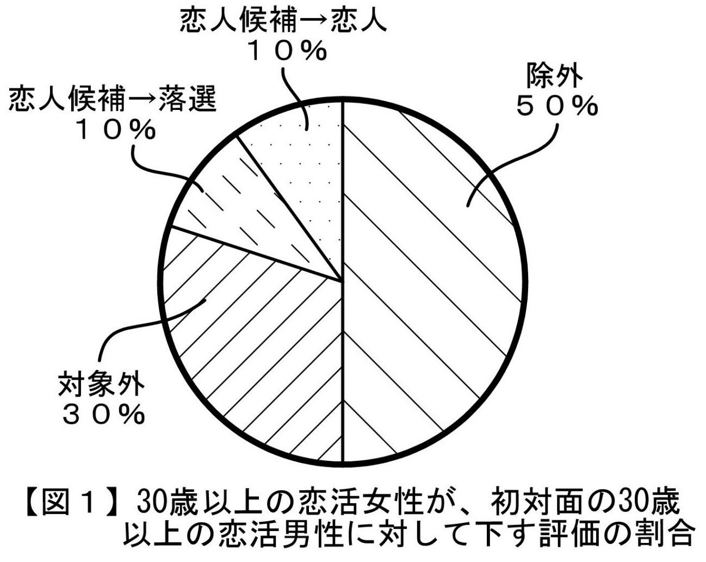
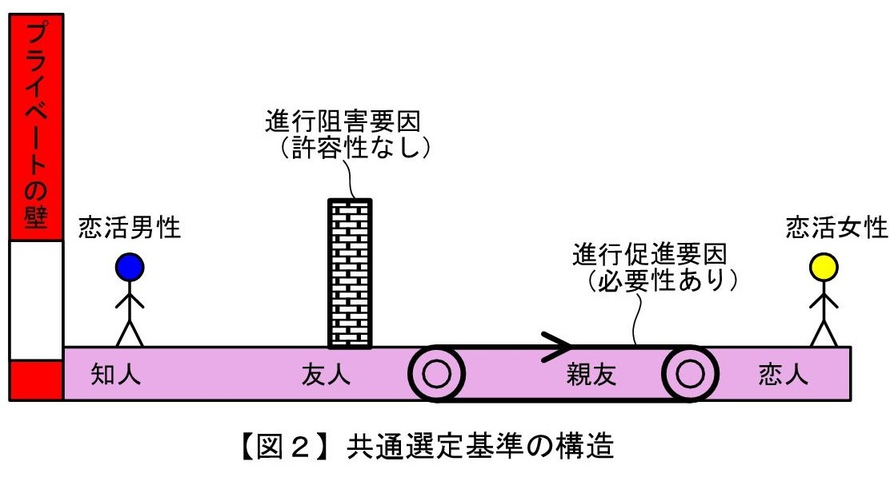
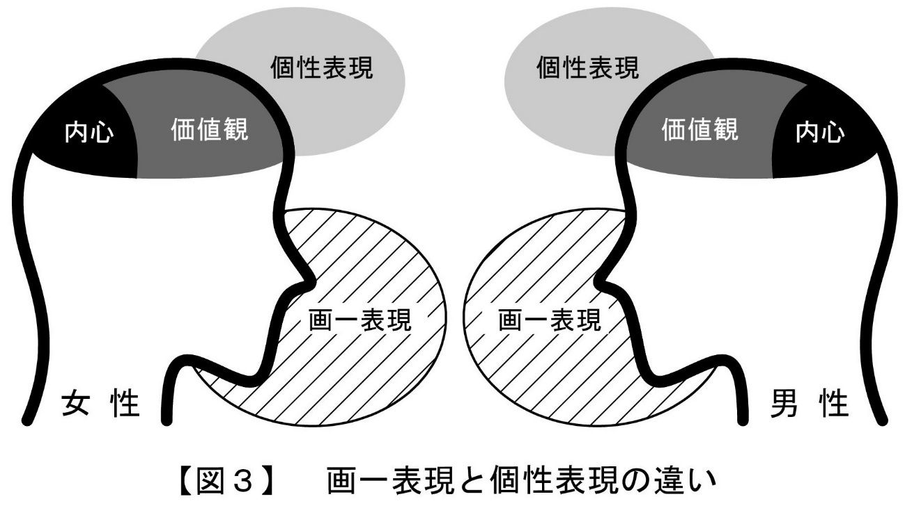
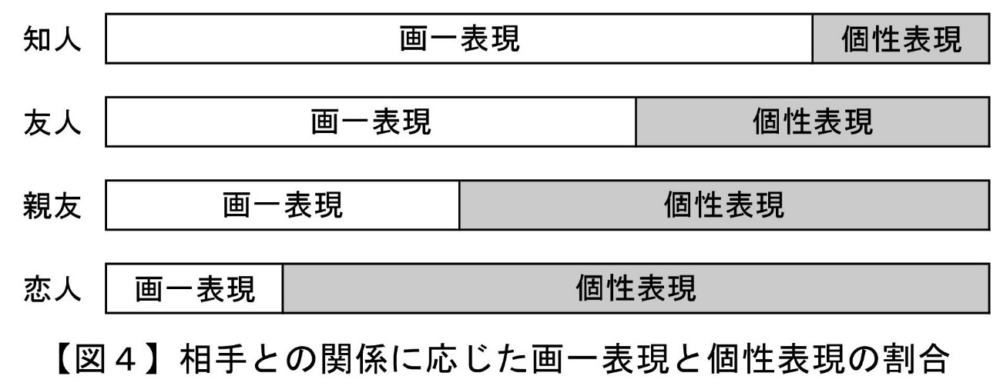
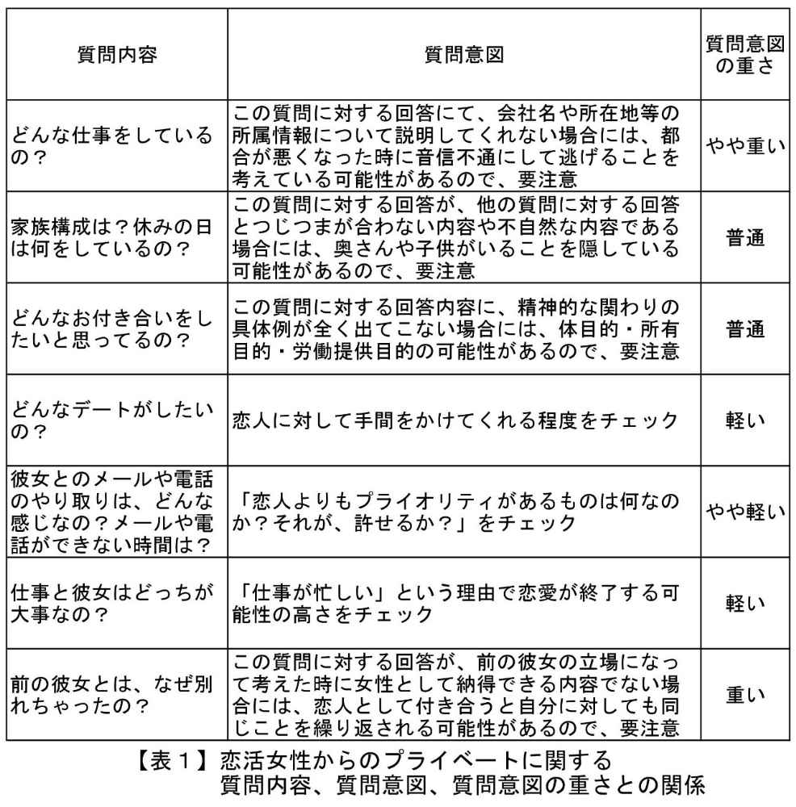

| ＜実態解明型＞恋活前のセルフチェック２【恋人候補→恋人編】前編: 意中の30歳以上の女性から恋人に選ばれるために Luff up (Passlead Lab) | |
| 深沢 涼 & 植松 優奈 | |
| pasurido (2015) | |
＜ 実態解明型＞ 恋活前のセルフチェック２【恋人候補→恋人編】前編
（１）女性から恋人候補として選ばれた男性のうち、その半数は、恋人として選ばれない
＜ Ａタイプ： 自分のことを自分からはあまり話さない恋活女性の場合＞
＜ Ｂタイプ： 自分のことを自分から積極的に話す恋活女性の場合＞
＜ Ａタイプ： 自分のことを自分からはあまり話さない恋活女性の場合＞
＜ Ｂタイプ： 自分のことを自分から積極的に話す恋活女性の場合＞
＜ Ａタイプ： 自分のことを自分からはあまり話さない恋活女性の場合＞
本書は、30歳以上の男性の恋愛ポテンシャルの更なる向上を目的として、「30歳以上の意中の女性を恋人にしたいと思っている30歳以上の男性」が、この女性の恋人候補から恋人として選ばれるために不可欠な事柄を記載したマニュアルです。
なお、本書をお読み頂く前提として、まずは、30歳以上の女性から恋人候補に選ばれる必要があります。このために不可欠な事柄につきましては、私の別著である「恋活前のセルフチェック １ 【知人→恋人候補編】」 というマニュアルに記載されております。30歳以上の女性の恋人候補に確実に残ることについてご不安な方は、本書に併せて、こちらのマニュアルをもお読み頂くことをお勧め致します。
私が本書を書いた動機は、30歳以上の恋活中の女性で私のことをよく知っている方々から、「私の恋愛経験に基づく知見を、30歳以上の恋活中の男性に対し、書籍を通じて伝えて欲しい」という要望を強く受けたことでした。それまでは、私自身、恋愛に関して特別な知見を持っているという自覚は全くありませんでした。しかし、こうした要望をきっかけとして私の人生を振り返ってみると、私は、普通の男性とは異なり、約40年間ずっと恋愛を中心的な価値として生き続けてきていることに気がつきました。この間、仕事と親友を除いては、心・時間・労力・お金・・・人としての原資のほとんどを様々なバリエーションの恋を実現するために使ってきたと言っても過言ではありません。加えて、これまでに私が恋愛に関して深く関わってきた多数の方々の評によれば、私は、普通の男性的なメンタルのみならず女性的なメンタルをも合わせ持っているらしく、確かに普通の男性には見えない知見や視点を持ち合わせているのかもしれない・・・と感じ、筆を執った次第です。
昨今の30歳以上の女性には、もちろん満足かつ幸せな恋愛生活や結婚生活を送っている方もみえますが、実際には、既婚者、独身者、離婚後独身者を問わず、日々の職場や家庭での義務を果たし続けていくための活力源として、「お互いに、分かり合え、思いやり合え、いたわり合える関係」となれる男性を求めて恋活をしている方が相当数いらっしゃいます。こうした女性の恋活は、必ずしも結婚を前提としたものではありません。むしろ、ストレス社会におかれている30歳以上の女性にとっては、「経済的な充足」よりも「心の充足」を強く求める傾向が高まっているということを、私は肌で感じています。
こうした昨今の女性の傾向については、おそらく、本書を購入されるような恋活に積極的な男性の皆様であれば、既にお感じになっていることではないかと察します。
他方、昨今の男性の傾向としては、「自分を愛してくれる女性がいない男性」や「自分を愛してくれる女性を求める男性」の数が、年齢を問わず、飛躍的に増加しています。
しかしながら、・・・私の別著である「男性が恋活前に知っておきたい30歳以上の恋活現場の傾向」」にも詳しく記載致しましたが、・・・私は、ＳＮＳを含む近年の恋活経験から、現実の恋愛市場においては、このような昨今の女性の眼鏡にかなう男性の数が著しく不足しているのでは・・・と実感しています。加えて、現在の恋愛市場では、特に"見た目年齢が35歳から45歳の女性"については、どの年齢の男性からも人気があることから、「たとえ女性の恋人候補に残ったとしても、競争率が高いために、最終的に恋人として選ばれないというケース」がとても多くなっています。
このことは、視点を変えれば、「意中の女性の眼鏡にかなうように自己点検や微修正をした上で、"この女性が恋人候補から恋人を選ぶポイント"を事前に知っておけば、容易に恋人として選ばれる」ということであり、恋活中の男性にとっては、この上ないチャンスであると思います。
「30歳以上の恋愛で成功するために必要不可欠なことは、30歳以上の仕事の場合と同様に、プラスポイントを伸ばすことではなく、マイナスポイントを無くすことである」
このことを、私は、私自身の経験から痛切に感じています。よって、本書には、恋愛成功のためにまずは無くすべきマイナスポイントを多数記載しています。マイナスポイントの内容によっては「当たり前のことである」と感じられる読者の方も多数いらっしゃるのではと察しておりますが、上述のチャンスを確実にモノにするために、今一度、その当たり前の内容をご自身が実行できているかどうかについて、本書でセルフチェックしてみることをお勧めします。
恋の出会いの機会は、自ら積極的に持つように努めない限り、歳を取っていくにつれて少なくなっていくものであり、この傾向は特に仕事漬けになりがちな男性の場合に顕著です。こうした貴重な出会いの機会を、成就させられないまま人生を終了する生き方よりも、成就させて楽しい人生を送る生き方の方が、何倍も素敵だと思います。
「本書を読んだ男性が、本来持っていたはずの何かを忘れていたことに気づき、その後にすんなり恋人ができ、日々、愛を感じる幸せな時間を持てるようになった」
私は、そのような知らせを何より嬉しく思います。
深沢 涼
●本書は、ボリュームの関係上、前編、後編の２分冊とさせて頂いております。
●本書において登場する男性及び女性は、恋愛する意思と恋愛するために必要な最低限の環境（健康、時間、お金等）を備えている男性及び女性になります。
●本書では、対象とするパーソナリティを、30歳以上の男性のうちの恋人を見つけたいと思って活動している一般人男性（以下「恋活男性」といいます）、30歳以上の女性のうちの恋人を見つけたいと思って活動している一般人女性（以下「恋活女性」といいます）に絞っています。よって、29歳以下の男性・女性の恋愛、一般人以外の方の恋愛については、本書では取り扱っておりません。
●本書で取り扱っている「30歳以上の恋活女性」は、純然たる恋愛目的（以下「恋愛目的」といいます）で相手を探している女性を想定しています。従って、"結婚を前提とした恋愛をする目的"や"恋愛感情の有無とは無関係にとにかく結婚を実現する目的"（以下、これらを総称して「結婚目的」といいます）で相手を探している女性、経済的支援を受ける目的（以下「支援目的」といいます）で相手を探している女性」に選ばれるために不可欠な事柄については、本書では取り扱っておりません。
●本書における「 恋人」とは、既婚又は未婚に拘わらず、純然たる恋愛目的の女性と男性が、お互いの偽りなきプライバシーに基づき、お互いに"心を通い合わせて思いやり合う時間を共有していきたい"と思う関係のことを意味します。よって、「プライバシーを偽ったお付き合い」、「体目的のみのお付き合い」等については、本書では取り扱っておりません。
●本書では、恋活男性がターゲットとする女性を恋活女性に絞っています。よって、「恋愛を求めていない」、「恋人はいらない」というステータスの女性に対して恋愛する気持ちを引き起させるテクニックについては、本書には記載されておりません。
●本書は、意中の恋活女性を恋人にしたいと思っている男性向けのマニュアルであり、「恋人は、女性であればよく、意中でない女性であっても構わない」という男性向けのマニュアルではありません。
●本書における 「恋活男性が意中とする恋活女性」は、一般的にみて、広範囲の男性から意中と思われ易い女性をモデルにしています。よって、本書では、 30歳以上の恋活女性のうち、「恋活男性が意中とする恋活女性」のことを、恋活男性にモテる女性であるという意味合いで"モテ女性"という用語で表すことがあります。
●本書は、「女性との出会い方」や「女性が既に好意を抱いている」等の出会いにおける環境的要素をすべて取り除き、どのような恋活女性にどのような出会い方をした場合でも恋人に選ばれることができるように、多面的かつ客観的な要件を記述しています。従って、職場や地域コミュニティ等のような「恋活女性の男性に対するハードルが落ちる環境下での出会い」であれば、こうした環境的要素が有利に働きますので、本書に記載の要件のすべてを具備しなくても、恋人として選ばれることがあります。
●本書は、30歳以上の恋活女性の恋人候補に残った後、この恋活女性から恋人に選ばれるために、どの恋活女性に対しても等しく備えるべき基礎的事項が記載されている書籍です。相手の恋活女性の特性に応じた対応ノウハウについては、別途、本書の記載内容をマスターしている男性の方を対象とした別マニュアルや私のサイトにおけるコンテンツサービスとして、ご提供していきたいと考えております。
●本書では、現在の恋愛市場において、恋活男性が恋活女性から恋人として選ばれるために、恋活男性に不足しがちな点や不利に解釈されやすい点を多々指摘しています。こうした指摘は、あくまで、「恋活男性が、恋活女性に対し、どのような気持ちで、どのような振る舞いをするか」という恋活の場面における不足や不利を指摘するものであり、恋活以外の場面における恋活男性の不足や不利を指摘するものではありません。
●本書に記載されたデータや数値は、あくまで私の実際の経験や知見に基づいて所定の恋活男性ないし恋活女性の母集団における実績から合理的に推定した内容であり、その正確性について保証や科学的証明を付するものではありません。
●本書の内容は、あくまで私の実際の経験や知見に基づいて記載しておりますので、読者の方の中には私とは異なる意見の方もいらっしゃると思います。何分、科学的に唯一の正解の出しにくいテーマであることをご斟酌の上、本書を一つの見解として参考にして頂ければと存じます。
現在の社会において、共に30歳以上の恋活女性と恋活男性の間で恋人関係を成立させるためには、まず、恋活の場である「恋愛市場」の現在の特徴についてしっかりと認識しておくことがとても大切です。なぜなら、現在の恋愛市場は、平成１５年以前のものとは全く異なったものになっており、現在もなお、男性不利の状況が進行していることから、恋活成功のためには、現状に即した対策をしっかりと立てておく必要があるからです。
こうした特徴につきましては、私の別著である「男性が恋活前に知っておきたい30歳以上の恋活現場の傾向」 に、詳しく記載しております。但し、本書の読者の方の中には、未だお読みになられていない読者の方も多数いらっしゃると思います。そこで、まず初めに、本書のテーマである「恋活女性による恋人の選定」に関連するものに絞り、恋愛市場の傾向や実態を読者の皆様との間で共通認識をしておきたいと思います。別著を抜粋した内容での説明となりますが、本書の読者の方の理解の便のためですので、何卒ご容赦ください。
なお、本書に記載された現在の恋愛市場の傾向や実態、評価は、直近２年間のリアル社会及びＳＮＳにおける、私自身の恋活経験及び私と深い意思疎通のある多数の30歳以上の恋活女性の恋活経験に基づくデータ（以下、「深沢データ」といいます）に基づいて考察ないし推定したものです。この深沢データは、単なる見ず知らずの女性に対するアンケートではなく、実際に私と懇意になった多数の恋活女性が私に露わにしてくれた内心に基づいて作成されていますので、ミリ単位での正確性には欠けるかもしれませんが、現在の恋愛市場の実態と大きくかけ離れていることは無いものと私は考えています。
それでは、30歳以上の恋愛市場における恋活女性による恋人の選定に関し、実態、要因、対策の順に説明をしていきたいと思います。
まずは以下の図１ をご覧下さい。

この図１ は、30歳以上の恋活女性が、何人かの30歳以上の恋活男性に初めて会った後に、各恋活男性について下した評価の割合です。この割合は、あくまで、深沢データに基づいて算出した概算値です。なお、本書における「初対面」とは、出会いのきっかけが何であるかを問わず、二人きりで会うことを約束した上で初めて二人きりで会う機会のことを意味します。
図１ 中の「除外」は「空間を共にしたくない」という評価、「対象外」は「空間を共にしてもよいが、恋愛対象としてはあり得ない」という評価、「恋人候補」は「恋愛対象としての決め手は無いが、他により良い男性に出会えなかったら、恋愛対象になるかもしれない」という評価を意味します。「恋人候補」のうちの「恋人」は初対面の後に何らかの恋愛関係に発展したケース、「恋人候補」のうちの「落選」は初対面の後に何らかの恋愛関係に発展しなかったケースを表しています。
このように、30歳以上の恋活女性に恋人候補として選ばれた計20％ の恋活男性のうち、その半数が恋人に選ばれていないことがわかります。恋人に選ばれなかった恋活男性は、その後、恋活女性により、"恋人候補"という恋人に発展可能性のある地位を剥奪され、「お友達」という微妙な地位に据え置かれることになります。
現在の30歳以上の恋愛市場では、恋活男性の数が恋活女性の数よりもかなり多い状態になっています。深沢データによれば、「実際に恋人を作る意思がある人」の男女比は、男性： 女性＝５： １程度であると推定されます。よって、現在の30歳以上の恋愛市場では、女性が"選ぶ側"として男性よりも圧倒的に優位に立っています。
こうした "女性優位"の市場であるにも拘わらず、実際の恋愛市場では、恋活女性が恋人候補や恋人に選ぶ恋活男性が特定少数の男性に集中し、１人の恋活男性が多数の恋活女性から恋人候補や恋人に選ばれるという現象（以下「ハーレム現象」といいます）が生じています。このような勝ち組男性の存在比率に関しては、深沢データによれば、恋活男性全体の約5％ であると推察されます。
こうした勝ち組男性を恋人に選ぶ恋活女性の中には、勝ち組男性に他の女性の恋人がいることを知りながら、「他の女性から恋人の座を奪うため」という発展的な理由や「恋人の座はどっちでもいいけど、その男性は自分にとって価値があるので、とにかく、密に接していたいから」という刹那的な理由で、勝ち組男性を恋人として選ぶ女性も、少なからず存在しています。
このように、恋愛市場では「少数の勝ち組男性を巡る恋活女性の肉食化」 が実際に起きているのです。
さて、「30歳以上の恋活女性に恋人候補として選ばれた計20％ の恋活男性のうち、その半数である10％ が恋人に選ばれず、5％ の勝ち組男性が集中してかつ重複して恋人に選ばれている」という実態について説明致しました。
なぜ、このような偏りが起きているのでしょうか？
その主たる理由としては、次の２つがあるものと考えます。
１つ目の理由は、恋活男性による被選定の錯誤（＝相手の恋活女性から恋人候補に選ばれていないのに、自分は恋人候補に選ばれていると思っていること）が生じていたからです。つまり、ふとした恋活女性の"大人の対応"的な言動や行動から、相手の恋活男性に、「相手の恋活女性の恋人候補になった」という誤認や、「恋人候補という地位は、ほぼ確実に恋人になることが予定された地位である」という誤解が生じているのです。この被選定の錯誤についての具体的な内容や防止策等の対策につきましては、私の別著である「男性が恋活前に知っておきたい30歳以上の恋活現場の傾向」 に詳しく記載しておりますので、ご興味のある方は、是非、お読み頂ければと思います。
２つ目の理由は、恋人候補に選んだ恋活男性について、その後の関わりを経て、「"人"としては問題ないけれども、"恋人"として持っていて欲しい内面要素が足りていない」 ということがわかったからです。
このような"恋人"として持っていて欲しい内面要素としては、非常にたくさんの要素があるのですが、これらの内面要素は、どの恋活女性にもほぼ共通 しています。
30歳以上の恋活女性は、過去の自身や友人の恋愛経験から、それぞれに、お付き合いした男性が持っていた内面要素について、「自分にプラスの影響を及ぼした内面要素」、「自分にマイナスの影響を及ぼした内面要素」の２種類を明確に区別して蓄積記憶しているものです。私は、近年の自身の恋活や恋愛の実経験を重ね続けた結果、この２種類の内面要素が、30歳以上のどの恋活女性においても、ほぼ共通していることがわかったのです。
また、先に説明した「勝ち組男性への集中化」という傾向は、まさに、こうした"共通の内面要素"を持っていそうな恋活男性に恋活女性の人気が集中することによって生じています。更に、現在の恋愛市場には、このような"共通の内面要素"を持っている恋活男性の数が少ないことによって、既述した"ハーレム現象"が生じているのです。
こうした「どの恋活女性にもほぼ共通する、恋人として持っていて欲しい"共通の内面要素"」としては、実際には、多種類の内面要素があり、かつ、これらの内面要素ごとに恋人として具備すべき内容や程度もあり、これらの内面要素間において具備すべき優先順位もあります。以下、本書では、こうした「ほとんどの恋活女性が、恋人となる男性には備えていて欲しいと考えている"共通の内面要素"」の総体のことを、30歳以上の恋活女性に共通する恋人選定基準 として 「共通選定基準」 という用語を用いて表します。
恋活女性が恋人候補に選んだ恋活男性を恋人に選ばないことには、必ず、真の理由があります。しかし、ほとんどの恋活女性は、その真の理由を相手の恋活男性に明確に伝えません。大人の対応により、相手の男性を傷付けないような理由（以下、「偽の理由」といいます）にすり替えて伝えるものだからです。
しかしながら、実際に「意中の恋活女性から恋人候補として選ばれたけれども、恋人として選んでもらえなかった。」という事態が、一度だけならまだしも、何度も続いたら、皆様ならどう感じるでしょうか？
恋活女性から言われた偽の理由を信じて、「運が悪かっただけだよ」と楽観的に考えきれますか？
「相手の恋活女性とのお付き合いに費やした時間や労力、お金をかけたことは、全く無駄ではない」と言い切れますか？
いつまでたっても恋人に選ばれないことで、自分が "万年恋人候補" や"女性と友達以上になれない男"のように思え、自分に対する自信まで喪失してしまうことはありませんか？
皆様の答えは、いずれも「いいえ」であると想像します。
「恋活前のセルフチェック１【知人→恋人候補編】」 にも記載していることですが、「過去にモテた男性や結婚経験のある男性であっても、自分では気づかないうちに、内面及び外見が劣化して、今は"万年恋人候補" や"女性と友達以上になれない男"になっている」という事例が多々あります。
私は、近年の自らのハード＆ タフな恋活経験において、多数の恋活女性について「恋人候補に選んだ恋活男性を恋人に選ばなかった真の理由」を明らかにすると共に、こうした真の理由を発生させた恋活男性の行動やその行動を支える内面要素を明らかにしました。そして、こうした行動や内面要素のうち、どの恋活女性にも共通するものを、共通選定基準 として位置付けて多数ピックアップしました。更に、 共通選定基準 としてピックアップした多数の行動や内面要素の中から、実際の恋活現場で恋人関係の成立に致命傷となる度合いの高い１５個を、 「恋人関係成立に不可欠な共通選定基準」として選定し、本書の第４章の恋活前セルフチェック【恋人版】にて列挙致しました。 故に、私は、「"恋人関係成立に不可欠な共通選定基準" を具備していない恋活男性は、どの恋活女性からも、恋人に選ばれにくい。逆に、"恋人関係成立に不可欠な共通選定基準" を具備するようになれば、恋活男性は、どの恋活女性からも、恋人に選ばれやすくなる。」ということを、自信を持って皆様にお伝えすることができるのです。
恋活女性から恋人として選ばれなかった理由を、運、縁、相性等の他責にしておくことも、自分のプライドを守るために必要なことではあると思います。
ただ、自分のプライドを守ることよりも、意中の女性から恋人に選ばれることを実現する方が大切なのでしたら、皆様の頭の中で「恋活女性から恋人として選ばれなかったのは、自分の責任、即ち、自分が本書の"恋人関係成立に不可欠な共通選定基準" という１５個の客観的かつ具体的な基準を満たしていなかったからである」と仮定した上で、第４章の恋活前セルフチェック【恋人版】を実践して１５個の基準の内容をチェック＆ マスターしていくことを強くお勧めします。こうすることで、"万年恋人候補" や"女性と友達以上になれない男"とは真逆の存在、即ち、"意中の恋活女性から恋人に選ばれるような勝ち組"に変わることができるからです。
"恋人関係成立に不可欠な共通選定基準" として選定した１５個の各行動や内面要素の内容につきましては、本書の第４章の恋活前セルフチェック【恋人版】にしっかりと記載しておりますので、それまでに、どうぞ心の準備をしておいて下さい。
さて、ここまでお読み頂いて、「本書における"恋人関係成立に不可欠な共通選定基準" としての１５個の行動や内面要素"の内容をマスターしたら、自分のことを恋人候補に選んだ恋活女性から100％ 恋人として選ばれるのか？」という疑問を抱かれた方もいらっしゃるかと思います。
本書における"恋人関係成立に不可欠な共通選定基準" の内容は、あくまで、恋活女性から恋人に選ばれるための必要条件の１つに過ぎず、十分条件ではありません。
なぜなら、"恋人"に選ばれる際には、共通選定基準 という客観的かつ固定的な基準を満たす以外に、「トキメキ」という主観的・変動的なプラスアルファ要素の発生が必要となる場合があるからです。こうした「トキメキ」の発生の動機には、恋活女性の性格・価値観 、女性の置かれた環境や状況、男性の振る舞いや押し引き等がありますが、これらのうちのどれが発生要因となるかは恋活女性によって全く異なっています。つまり、この「トキメキ」をどの恋活女性にも必ず発生させるためのメカニズムや法則は無いのです。
よって、本書における"恋人関係成立に不可欠な共通選定基準" は、「トキメキ」を発生させる装置（例えば、光合成により「酸素」を発生させる木）ではなく、あくまで「トキメキ」が発生しやすくなるような土台（例えば、木が生えやすい土壌）であることを、ご理解頂ければと思います。
ここまでの第１章では、まずは、現在の恋愛市場における恋人関係成立の傾向を明らかにすると共に、その対策ツールとして、本書の"恋人関係成立に不可欠な共通選定基準" に基づく恋活前セルフチェック【恋人版】（以下、「恋活前セルフチェック」といいます）が位置付けられることをご紹介してきました。
おそらく、このような恋人関係成立が難しい現状を客観的な立場で納得された方はたくさんいらっしゃるのでは・・・と察しますが、自分自身のこととして、即ち、「自分は、図１ の恋人候補止まりとなる10％ の男性の中に含まれている」と感じられた方は、少ないのではないかと思います。
例えば、過去に恋愛経験のある方については、過去の栄光を思い浮かべて、「自分は恋人候補止まりとなる10％ に入っていない」という気持ちになるのではないでしょうか。
また、現在も、会社やサークル、習い事、地域団体等のコミュニティで女性との関わりがある方については、コミュニティで女性とうまくやっていること等を思い浮かべて、「自分は恋人候補止まりとなる10％ に入っていない」という気持ちになるのではないでしょうか。
私も男ですから、「自分は恋人候補止まりとなる10％ に入っている訳がない」という主観や「自分は恋人候補止まりとなる10％ に入っていると思いたくない」というプライドは、とてもよくわかります。
しかし・・・あえて、読者の方の今後の幸せな恋愛ライフを願って、はっきりと申し上げますが・・・、こうした主観やプライドを、少なくともこの本を読み終わるまでの間は、どうか捨てて下さい。なぜなら、現在の恋愛市場では、「このような主観やプライドを固持している限り、恋活において置き去りにされ、恋活の成功率は、この先、年々低下していく」 という傾向が非常に強いからです。
逆に、「自分は恋人候補止まりとなる10％ に入っているかもしれない」という謙虚な気持ちで、本書の第４章の恋活前セルフチェックを素直にかつ積極的に実行された方は、恋活の成功率が上がり、加えて、この先も下がることがないという自信をつかむことができることを、私は自らの経験から確信しています。
お恥ずかしい話ですが、こんな偉そうなことを書いている私自身、数年前まで、つまらない主観やプライドを固持していました。「10代からずっと切れ目なく恋人がいる」という過去の栄光を捨て去れなかったからです。
つまり、本書の第４章の恋活前セルフチェックは、そんな私自身が主観やプライドを捨てて、「どのような恋活女性であっても意中の女性からは恋人候補から恋人に選ばれる」ということを目標にした上で試行錯誤しながら実行し、その結果、実際に恋人に選ばれるための普遍的な必須要素であったものを、"恋人関係成立に不可欠な共通選定基準" としてピックアップしたものなのです。
それでは、読者の方が、等しく、恋活前セルフチェックに前向きかつ貪欲に取り組もうという気持ちになって頂くために、本章では、恋活前セルフチェックを実践するメリット、即ち、読者の方が恋活前セルフチェックを実践することによって、どのようなメリットが得られるのか、ということについて説明していきたいと思います。
恋活前セルフチェックの第１の実践メリットは、読者の方が「恋人を選べるようになる」ということです。
「意中の女性と恋人としてお付き合いする。」
このことは、男性としては、人生において、重要度合いはそれぞれに違うけれども、是非とも実現し続けたいことであると思います。
この実現のためには、最低限、以下の２つのことが必要になります。
（ａ）意中の女性に出会うこと
（ｂ）意中の女性から恋人として選ばれること
（ａ）については、本書のテーマからずれますので、「出会いづくり」ということをテーマにした別マニュアル又は私の運営するサイト においてお伝えしていきたいと考えております。
（ｂ）について、読者の皆様は、どのような経験をされているでしょうか？
おそらく、意中の女性から恋人として選ばれたケースよりも、意中の女性に対して「恋人として付き合えたらいいなぁ」のように片思いで終わったケースの方が遥かに多いのではないでしょうか。
そもそも、意中の女性から恋人として選ばれなければ、その女性を恋人として選ぶことはできません。換言すれば、意中の女性から恋人として選ばれてはじめて、その女性を恋人として選ぶことができるのです。
現在の30歳以上の恋愛市場では、意中の女性に"出会う確率"は、従来よりも確実に高くなっています。なぜなら、出会うための手段として、コミュニティや友人の紹介、合コン等のような従来からある手段に、ＳＮＳ、社会人サークル、街コン等の新しい出会い手段が加わっているからです。但し、新しい出会い手段で意中の女性に出会うためには、出会いの場の特徴や参加者の実態、費用対効果等を意識した的確なアプローチ行動が必要になります。
一方、意中の女性から"恋人として選ばれる確率"は、第１章で説明しましたように、30歳以上の恋愛市場における女性優位や勝ち組の存在等に起因して、従来よりも確実に低くなっています。近年の恋活を経験されている読者の方の中には、過去の恋人よりもグレードの低い女性からフラれてしまい、そのことについて「なぜだろう。」のように納得していない方や「相性が悪かったからかな。」のように自己擁護している方も、少なからずいらっしゃるのではと思います。
よって、出会いの機会が多く競争の激しい現在の恋愛市場において、出会った意中の恋活女性から恋人として選ばれる確率を高めるためには、この恋活女性から自分の必要性を他の恋活男性よりも強く感じ取ってもらえるように、自己を点検して他の恋活男性に勝るための必要な修正を行い、出会いに備えておくことが必要になります。
本書の恋活前セルフチェックは、こうした自己点検・修正のためのツールであり、その内容は「モテ女性 を含むどの恋活女性にも恋人候補から恋人として選ばれるための"恋人関係成立に不可欠な共通選定基準" 」としてまとめられています。従って、意中の恋活女性１人から恋人として選ばれる確率を高めることができることは勿論のこと、意中の恋活女性が複数いた場合であっても、その全員について、恋人として選ばれる確率を高めることができます。つまり、「意中の恋活女性のうち、どの恋活女性を恋人にするか」を自分で選ぶことができるようになり、この結果、「意中の恋活女性にフラれたので、妥協して、意中でない恋活女性と恋人になる」という不本意な決断をしなくてもよくなるのです。加えて、意中の女性と恋人としてしばらく付き合った後にフラれてしまったとしても、既にモテ女性 から恋人として選ばれる自信がついていますので、即座に切り替えて、次の恋愛を実現することができるようになるのです。
・身近な男性が、ＳＮＳ等の新しい出会い手段をも活用して意中の女性に出会い、この意中の女性から気に入られて恋人となった状況を、指をくわえて見ている。
・意中の女性に出会ったが恋人として選んでもらえず、その後に意中ではない女性に出会って恋人として選んでもらったので、恋人がいないよりマシかと思ってお付き合いをし始めたが、なんか楽しくない。
このような面白くない事態は、本書の恋活前セルフチェックを行うことで、以降の恋活においては無縁のものになるでしょう。
このように、本書の恋活前セルフチェックは、皆様を「選ばれる人」から「選ぶ人」に変え、皆様の恋愛相手の選択肢を広げて恋愛ライフを豊かにするためのツールなのです。
恋活前セルフチェックの第２の実践メリットは、読者の方の「女性との友人関係の質と量が豊かになる」ということです。
読者の皆様は、「異性の友人」について、どのような考えをお持ちでしょうか？
「成立する」という考えの方、「体の関係無しでは成立しない」という考えの方、「必要」という考えの方、「不要」という考えの方、・・・様々な考えの方がいらっしゃるかと思います。
では、皆様が、同じ質問を、「意中の女性ととても良い恋愛をしていて、性欲が満たされている時期」にされたとしても、答えは変わらないでしょうか？この場合には、気持ちに余裕があり、女性にがっつく気持ちも無いので、先の質問に対して「体の関係無しでは成立しない」、「不要」のように答えられた方も、「別に、いてもいいかな。」、「彼女のことも相談できるし、便利かも。」のような異性の友人を許容する答えにシフトしていくのではないかと想像します。
一旦恋人関係になった女性と別れた後に友人として付き合い続けることは、一般的には、子供やお金とかの二人の関係のかすがいになるものが無い限り、難しいと思います。例えば、女性が男性に対する恋愛感情を失って別れた場合には、男性に対する想いが頂上から急降下して、友人のレベルで止まらず他人レベルまで一気に下がることから、心の距離がプライベート領域を越えてしまうほどに遠くなってしまいがちです。また、女性が男性に対する恋愛感情を保持しながら別れた場合には、この気持ちを女性が保持し続けても自身が惨めになるだけなので、無理矢理に心の距離を遠ざけるように自己暗示し、その男性との間に自ら一線を引いて、忘れようとします。よって、いずれの場合においても、友人としてのリスタートは、ほぼ不可能であると思います。
これに対し、未だ恋人関係になっていない女性と友人として付き合い続けることは、その女性には男性から積極的に離れようとするベクトルが働いていない以上、十分に可能です。
前置きが長くなりましたが、・・・ここから本題です。
貴男を恋人候補として選んでくれた女性が複数人（例えば、女性ａ、女性ｂ、女性ｃの３人とします）いて、貴男が恋活前セルフチェックを実践した結果、その全員から恋人として選ばれたとします。貴男は、最も意中であった女性ａを選んで恋人になりました。この後、貴男は、女性ｂ，ｃとは、どのような関係にしていきたいと思いますか？もし、その女性ｂ，ｃが、いずれも貴男の意中の範囲に入る女性であったとしたら、その後も女性ｂ，ｃと、恋人である女性ａから許容される範囲で、何らかの関係を持ち続けたいとは思うのではないでしょうか。
本書の恋活前セルフチェックにおける"恋人関係成立に不可欠な共通選定基準" の内容を実践できている恋活男性は、30歳以上の恋愛市場に極めて少数しかいません。従って、貴男が"恋人関係成立に不可欠な共通選定基準" を備えることを理由に貴男を恋人として選んでくれた女性ｂ，ｃは、それまでに貴男と肉体関係になっていない限り、「貴男に女性ａという彼女ができた後であっても、貴男には他の男性には無い魅力があるので、貴男と引き続き、友人以上恋人未満として関わっていきたい」と思うはずです。この場合、女性ｂ，ｃと貴男の間における「友人以上恋人未満」の定義は、力関係としては貴男の方が優位なので、貴男の希望に近い内容で決めることができると思います。そして、女性ｂ，ｃが価値を認めた貴男の魅力は、女性ｂ，ｃの女友達に伝搬し、その女友達を含めて、「貴男を中心にした仲間たち」というコミュニティに発展することもあるでしょう。
つまり、貴男が恋活前セルフチェックにおける"恋人関係成立に不可欠な共通選定基準" の内容を実践することは、貴男に「女性との友人関係の質と量が豊かになる」という付随的な産物をもたらし得るのです。
以上のことは、私の実際の経験に基づくものです。私も、若い頃は、女性との友人関係を完全否定する考え方でしたが、今は、自分の内面の価値を心から認めて必要としてくれた女性との間では、男性の友人にはないような「ソウルメイト」の関係を実現でき、女性目線での意見も気軽に聞くことができるので、そういう女性がいることも、お互いの人生がより豊かなものになる点で、良いことだと感じています。
恋活前セルフチェックの第３の実践メリットは、読者の方の「活動範囲が広がり、この結果、知見が豊かになる」ということです。
男性の活動レベルは、一般に、女性と比べて、「自信」に左右される傾向があります。同じ男性であっても、自信がある時の活動は積極的で範囲が広く、自信がない時の活動は消極的で範囲が狭くなったりするものです。そして、活動範囲が広がれば、人との出会いの機会や入ってくる情報も豊富になり、知見が豊かになっていきます。
恋愛の場面においても同様であり、「意中の女性から恋人に選ばれる」という経験が重なれば、「自分はモテる」と自覚し、男性としての付加価値について自信を持ちます。こうした自信から、恋愛はもとより恋愛以外のことについても、活動範囲が広がり、この結果、知見が豊かになる。このことは、読者の方が容易に推察できる効果であると思います。
私がここで強調したいのは、「本書の恋活前セルフチェックにおける"恋人関係成立に不可欠な共通選定基準" の実践によって得られる効果（＝活動範囲の広がりや知見が豊かになる）の度合いは、何もせずにモテて得られた時のような浅いものではない」ということです。なぜなら、"恋人関係成立に不可欠な共通選定基準" の内容は、専ら男としての核心的な内面要素のレベルアップ が図られるように定立されているため、その実践により、モテ女性 を含むどの恋活女性にも「貴男の内面は、すばらしく、私にとって必要である。」のように感得されます。自分のことを恋人として選んでくれた多くの女性から等しく内面要素の承認や必要性を得たことによって得られる自信は、例えば単に外見要素の良さを認められた場合と比べて、計り知れないほどに大きいものなのです。例えば、恋愛以外の場、例えば、職場や家庭、地域団体等の場において、他人から評価されるものは、基本的には内面要素のみです。よって、それぞれの場において貴男の内面要素が人を引き付けることになり、貴男が何も要求しなくても、周りが貴男に特別に重要な人との出会いの機会や重要な情報も提供してくれることになるでしょう。
このような内面要素の重要不可欠性に言及すると、「じゃあ、外見要素は関係ないのか？」という疑問も生じるかと思います。外見要素については、内面要素とのバランスという意味で、一定のレベルが要求されます。詳しくは、私の別著である「恋活前のセルフチェック１【知人→恋人候補編】」 に記載しておりますので、気になる方は、この機会に是非、お読み頂ければと思います。
女性からモテる理由には、大きく分けて、外見要素、内面要素、勢いという３つの要素があります。このうち、勢いについては、主として20代未満の男性にのみ該当する要素ですので、本書では説明を省略致します。
読者の皆様は、これまでに、外見要素、内面要素のどちらでモテてきた人でしょうか？少々思い出してみて下さい。
30歳以上の恋愛の場合、外見要素の魅力だけでは、底の浅い付き合いとなり、結婚という契約で縛られない限り、恋愛が成立しても長続きしないものです。よって、お互いを深く思いやり合える恋愛を長期に継続しかつ発展させていきたいのであれば、モテる主要因は内面要素であることが必要になります。そして、外見要素は、「内面要素の良さが滲み出たカッコ良さ」 であることが理想です。歳を重ねるにつれて、人の内面要素は、その人の顔に表れやすくなります。顔つきで内面の悪さを感じ取られてしまったら、以降、相手は近づいてきません。こうしたことを防止するためにも、30歳以上の恋愛に臨むに際しては、内面要素を磨くことがとても重要になるのです。
特に男性は、置かれている人間環境によって外見要素のレベルが天地に変化するものです。私は、「２０代で外見要素をウリにモテていた男性が、３０代でもその路線で通用するとして内面要素を磨かなかったばかりに、次第に周りの男性や女性から "中味が薄い"や"弱者に対する思いやりに欠ける"として敬遠されていった結果、４０代になって、以前とは変わり果てた生気に欠けた外見になってしまった」のような衰退例を、数多く見てきています。自分の置かれている人間環境を良くするのは、まさに内面要素に他なりません。内面要素がレベルアップすれば、その色気が外見要素にも必ず現れてくると思いますし、そうした色気を感じ取る本能を女性は備えているものです。
一方、現在も外見要素でモテている方は、・・・おそらくそのような方は本書を購入する動機に欠けるので少ないかとは思いますが・・・本書の恋活前セルフチェックにおける"恋人関係成立に不可欠な共通選定基準" の実践によって内面要素のレベルアップを図れば、恋愛市場においてはほぼ無敵になることと思います。
本書の第４章の恋活前セルフチェックの内容を正確に理解するためには、まずは、恋活前セルフチェックで用いられている「共通選定基準 」 というものの構造や機能について、しっかりと理解をして頂く必要があります。以下、本章において、詳しく説明させて頂きます。
まず初めに、共通選定基準の構造について、図２ を参照しつつ、共通認識をしておきたいと思います。

図２ は、恋活女性が恋活男性に対してプライベートの壁を開け、恋活男性が恋活女性のプライベート領域に入ってきた時の状態を表しています。この時点では、恋活男性は恋活女性の「知人」と同等の地位となりますが、恋人候補として入ってきていますので、恋活女性によって「恋人」に向かう通路が形成されています。これから、恋活男性は、この通路を「恋人」というゴールを目指して進んでいくのですが・・・その途中には、図２ に示すように、鉄格子の絵で示した「進行阻害要因」が存在しています。また、この進行阻害要因を越えたところには、ムービングウォークの絵で示した「進行促進要因」が存在しています。共通選定基準は、この「進行阻害要因」と「進行促進要因」とから構成されています。
「 進行阻害要因」とは、意中の恋活女性のプライベート領域において、恋活男性がゴールである"恋人"に向かって進んでいくことを阻害する要因（＝行動、その行動を支える内面要素） を意味するものであり、恋活男性にとって「ブレーキ」として機能します。
この進行阻害要因 は、恋活女性が、恋人候補である恋活男性の行動やその行動を支える内面要素に接した時に、その恋活男性に対する気持ちがマイナス側に動き、「恋人にする許容性が無い」という評価をする ことによって発生します。この発生により、恋活女性は恋活男性に対して「恋人候補かと思ったけど、やっぱり違うみたい」 という感情を抱きますので、以後、恋活男性はこの恋活女性との恋人関係の成立を目指すことができなくなってしまいます。
進行阻害要因 には、次のA、Bの２種類があります。
A．必須内面要素の不足
一般的に恋人であれば備えるべき内面要素（以下、「必須内面要素」といいます）が不足している。
B．アウト内面要素の存在
一般的に恋人には備えていて欲しくない内面要素（以下、「アウト内面要素」といいます）を備えている。
必須内面要素 は、恋活女性が一般的に楽しいと感じるコミュニケーションを支える要素 です。
よって、恋活女性は、相手の恋活男性に必須内面要素 が不足していることを察知した場合、恋活男性に対し、「想ってくれているのはわかるけど・・・なんか足りていない、コミュニケーションしていて楽しくない」 という感情を抱きがちです。例えば、「メールしている時や一緒にいる時に、相手の女性が楽しそうではない」、「相手の女性が希望するイベントに一緒に行った際に、ただイベントをこなしているだけの感じで、イベント以外についての話が盛り上がらない」、「相手の女性から笑いのツボやタイミングが違うと言われる」という場面の経験頻度が多い男性の方は、"必須内面要素 の不足"に原因がある可能性が高いものと推察されます。
この"必須内面要素 の不足"は、恋活男性の不作為、即ち、必須内面要素 が相手の恋活女性に伝わっていないことによって生じます。よって、"必須内面要素 の不足"を防止するためには、恋活男性が 必須内 面要素 を相手の恋活女性に伝え、かつ、伝わるようにすることが必要 になります。
アウト内面要素 は、30歳以上の男性が備えがちな習癖的な要素であって、恋活女性が一般的に嫌う傾向にある要素です。
よって、恋活女性は、相手の恋活男性にアウト内面要素 が存在することを察知した場合、恋活男性に対し、「悪気がないのはわかるけど・・・相性が合わない」 という感情を抱きがちです。例えば、「それまで楽しそうにしていた相手の恋活女性がシラけた態度に急変した」、「それまで頻繁にメールをやり取りしていたのに、ある日を境に、相手の恋活女性からメールの返信が少なくなり、やがて、相手の恋活女性から"貴男とは合わないと思う"や"貴男には私よりも相応しい人がいる"と言われた。」という場面の経験頻度が多い男性の方は、"アウト内面要素 の存在"に原因がある可能性が高いものと推察されます。
この"アウト内面要素 の存在"は、恋活男性の作為、即ち、アウト内面要素 が相手の恋活女性に伝わったことによって生じます。よって、"アウト内面要素 の存在"を防止するためには、恋活男性が、 アウト内面要素 を相手の恋活女性に伝えない、かつ、伝わらないようにすることが必要 になります。
但し、アウト内面要素 に関しては、必須内面要素 とは異なり、どのようなアウト内面要素 を嫌いであるか又は気にしないかについては、恋活女性によって異なります。また、アウト内面要素 は、習癖的なものであるが故に、恋活男性にとっては、余程の強い意思が無い限り、治すことが難しい場合もあります。よって、「恋活男性は、相手が自身のアウト内面要素 を嫌うような恋活女性であった場合には、その恋活女性とは恋人に向かって進むことを自発的に止めて、恋人にしようとするターゲットを自身のアウト内面要素 の存在を気にしない恋活女性に変更する」という判断も、時間の効率的な活用の観点から賢明な選択肢の１つであると考えます。
「 進行促進要因」とは、意中の恋活女性のプライベート領域において、恋活男性がゴールである"恋人"に向かって進んでいくことを促進する要因（＝行動、その行動を支える内面要素） を意味するものであり、恋活男性にとって「アクセル」として機能します。
この進 行促進要因 は、恋活女性が、恋人候補である恋活男性の行動やその行動を支える内面要素に接した時に、その恋活男性に対する気持ちがプラス側に動き、「恋人にする必要性がある」という評価をする ことによって発生します。この発生により、恋活女性は恋活男性に対して「積極的に時間を共有したい」 という感情を抱きますので、恋活男性はこの恋活女性との恋人関係の成立をスムーズに進めることができるようになります。
恋活女性は、"恋人候補"という地位に置いている恋活男性を、どのような条件が満たされた時に、"恋人"という地位に移動させるのでしょうか？
それは、「恋人にする許容性」、「恋人にする必要性」という以下の２つの条件が満たされた時です。
恋活男性の場合には、一般に、恋活女性と"恋人"になる理由としては、「恋人にする必要性」が強く、「恋人にする許容性」は、あまり問題にしません。「恋人にする許容性」については、恋活男性の場合、往々にして、"恋人になった後"に問題としがちです。恋人になってから、女性に対して「派手な服を着るな」、「夜は早く帰れ」、「毎日電話しろ」などとうるさく言う男性って、よくいますよね。これらは、全て「恋人にする許容性」を問題にしているのです。但し、例外として、 恋愛成立を目的とした恋人候補の範囲の妥協的な拡大（恋人がいない寂しさを埋めるために、恋人にしたいと感じる恋活女性の範囲を、恋愛関係が成立しやすい恋活女性にまで広げようとする現象）を図ろうとする場合には、恋活女性と"恋人"になる理由として、「恋人にする必要性」よりも「恋人にする許容性」を重視することがあります。
これに対し、恋活女性の場合には、次の項目で述べる「例外： 恋活女性から共通選定 基準 が要求されない場合」を除き、恋活男性と "恋人"になる理由として、「恋人にする許容性」、「恋人にする必要性」を、ほぼ同じ割合で問題にします。男性が女性を口説くのに時間を要するのは、これら両方を満たさなければならないからなのです。
こうした女性の恋人選定プロセスに着目し、本書における共通選定基準 は、恋活女性から「恋人にする許容性」として求められる内面要素を"進行阻害 要因 " として、恋活女性から「恋人にする必要性」として求められる内面要素を"進行促進要因 " として、それぞれ、ピックアップしたものになっています。
本書の進行阻害要因及び進行促進要因では、既述したように、「恋活男性の行動やその行動を支える内面要素」に着目して、次のことを明らかにしています。
意中の恋活女性から恋人に選んでもらうために、
恋活男性は、
（ａ）自身の価値としてどのような内面要素（＝具体的行動のベースとなる要素。例えば、恋愛や女性に対する考え方や 価値観 。）を備えれば良く、
（ｂ）この内面要素を伴う行動として、恋活女性に対し、どのような具体的行動を取り、又は、取らなければ良いのか？
従って、「メールをマメにする」、「相手の興味のある場所にデートに連れていく」等のような内面要素の露呈を伴わない攻略手法的な行動については、本書では扱いません。なぜなら、30歳以上の恋活女性は、恋人候補としての恋活男性を恋人にするorしないの判断に際し、等しく、相手の恋活男性の"内面要素と内面要素を伴う行動"を本質的な判断要素として最も着目しており、内面要素の露呈を伴わないような攻略手法的な行動については、単なるノリや習慣の一致等の付録的な判断要素としてしか扱われないからです。
特に、消極的な恋活女性、ハードルの高い恋活女性のような"難攻不落な恋活女性"の場合には、恋人候補としての恋活男性について、「"内面要素と内面要素を伴う行動"が、主観的のみならず客観的に見ても恋人に値するものであるかどうか？」、「言動と行動が、同一の内面要素に基づいていて一致しており、矛盾が無いか？」ということについて、無意識に感覚的なチェックを行っています。本書の進行阻害要因 及び進行促進要因 では、こうした"難攻不落な恋活女性"のチェックをもクリアするために必要な内面要素を抽出しています。このため、以降に説明していく進行阻害要因 及び進行促進要因 の内容について、読んでみて「厳しい」、「細かい」、「無理」と思われる方もいらっしゃるかもしれません。よって、以降に列挙した進行阻害要因 及び進行促進要因 をどの程度クリアするように恋活前セルフチェックを実践していくかについては、読者の皆様ご自身が想定している恋活女性の難攻度合いやライバルとして想定している男性像に応じて、強めたり緩めたりしていって頂ければと思います。ただ、私の経験から、こうした内容を認識しておくだけでも、恋活の成功率は高くなるものである」と考えておりますので、おまじないを受けているような楽な気持ちで読み進めて頂ければと思います。
ここまでお読み頂いて、読者の方のうち、過去の恋愛経験において相手の女性と知り合ってからスムーズに恋人関係になれている方は、「進行阻害要因 のようなものの存在を感じたことが無いけど・・・」と感じられたことと思います。
そのような方は、おそらく、その女性との恋愛成立の過程が、これから説明する「恋活女性から共通選定基準 （特に、進行阻害要因 ）が要求されない場合」という例外的な事例に該当していたからではないかと私は考えます。
恋活女性は、「恋人候補としての恋活男性の外見要素についてトキメキ（以下、「外見トキメキ」といいます）を感じている場合」には、その恋活男性に対して、進行阻害要因 のチェックをしないか、チェックをしてもその判断基準が極端に甘くなる傾向があります。恋活女性の心の中で、相手の恋活男性について、「恋人にする許容性」よりも「恋人にする必要性」の方が大きくなるため、"恋人"というゴールに早く到達したいという願望が強くなり、これにより、進行阻害要因 を冷静にチェックする機能を自ら停止させてしまうからです。
また、進行促進要因 に関しては、外見トキメキ状態の恋活女性は、「恋人にする必要性」の裏付け（＝相手の恋活男性の良いところは、外見だけではなく、内面要素でもあること）を積極的に得ようとするために、非常に甘い判断基準で、その存在を認定しようとします。こうした認定の手法としては、例えば、存在を認定したい進行促進要因 が「一途さ」である場合に、「恋活男性に対する誘導質問によって、相手の恋活男性が一途であることを恋活男性に告白させる」、「相手の恋活男性に対し、"私との付き合いでは一途であること"という条件を提示して、恋活男性に遵守を誓約させる」、「相手の恋活男性の何気ない発言や行為を"自分に対する一途さの現れである"と都合良く解釈し、恋活男性が一途であると思い込む」等を挙げることができます。
但し、このような外見トキメキによって出会ってから早期に成立した恋愛関係は、長続きしないことが多いものです。それは、女性が、恋愛関係成立前にノーチェックだった進行阻害要因 について、恋愛関係成立後のお付き合いの過程で、次第にその存在（即ち、恋人にする許容性がないこと）を感じるようになることが多いからです。既述したように、男性の場合には、相手の女性と恋人関係になってから、その女性について「恋人にする許容性」を問題にしていきます。よって、このようなケースでは、恋人としての男女が、それぞれに、相手の「恋人としての許容性」をチェックし合っていることになり、このために摩擦が起きやすいのです。
よって、このような例外に該当しやすいイケメン男性の方は、もし本書を読み進めていって、本書に列挙した進行阻害要因 としての内面要素を持っていた場合には、「この内面要素を、相手の恋活女性から恋人候補に選ばれた段階で、自ら積極的に暴露しておく」という手法を取ることも一案であると考えます。これにより、相手の恋活女性の進行阻害要因 のチェック機能が働くようになりますので、恋人関係の成立は若干遅くなるかもしれませんが、成立後には長く安定した恋人関係を実現することができることと思いますので。
それでは、いよいよ、本論である恋活前セルフチェックに入っていきます。本書の恋活前セルフチェックは、自分のことを恋人候補に選んでくれた意中の恋活女性から確実に恋人として選んでもらえるようになることを実現するためのツールです。少々堅い表現で読みにくい部分もあるかもしれませんが、ゆっくりと理解を進めて頂ければと思います。
それでは、テーマごとに次の四つの節に分けて、順次、説明致します。
第１節 総論
第４節 進行促進要因 のチェック
まず初めに、本章の説明にて用いる用語である「画一表現」、「個性表現」、「価値観」、「内心」という用語について、図３ 及び図４ 参照しつつ説明致します。

「 個性表現」とは、自己の価値観 や内心 が表れている表現を意味します（図３ を参照）。
「 価値観」は、物事の価値に対する考え方であり、継続的に関わっていく他人に対して必要に応じて露出される性質をもっています（図３ を参照）。
「 内心」は、心に秘めた気持ちであり、他人に露出することが予定されておらず、他人とは言えないような特別な人（例えば、恋人のような心の距離の近い人）に限って露出される性質をもっています（図３ を参照）。
「個性表現 」は、こうした価値観 や内心 の内容を含むが故に、相手を選んでなされます。よって、「個性表現 」を行うためには、「この相手に露出しよう」という意思を持つことが必要になります。
一方、「 画一表現」とは、個性表現 以外の表現を意味します。「画一表現 」は、価値観 や内心 の内容を含まないが故に、相手が誰であるかにあまり関係なく自然かつ一様になされるものです（図３ を参照）。例えば、面白いと思った話に笑う、ハプニングを見て驚く、話しかけられて返事をする、わからないことに対して質問する等、ほぼ条件反射的になされるものが含まれます。
人が相手に対して行う表現全体における個性表現 と画一表現 との割合は、図４ に示すように、相手が心の距離の近い関係になるほど、個性表現 の割合が多くなる傾向があります。

恋活前セルフチェックを行うに際には、まず、「読者の皆様が、意中の恋活女性の恋人候補に選ばれて、この恋活女性のプライベート領域の入口に立っている」と仮想してみてください。
この後、恋活女性のプライベート領域において、恋人に向かう通路を進んでいくためには、図２ に示したように、まず、共通選定基準 のうちの進行阻害要因 をクリアし、その後に、共通選定基準 のうちの進行促進要因 をクリアしてくことになります。
本書の恋活前セルフチェックでは、共通選定基準 となる行動や内面要素のうち、恋人関係成立に不可欠であり、実際の恋活現場で恋人関係の成立に致命傷となる度合いの高いもの１５個を、"恋人関係成立に不可欠な共通選定基準" として厳選しております。この１５個の行動や内面要素の内訳は、進行阻害要因 となるものが１０個（必須内面要素 の不足に関するものが５個、アウト内面要素 の存在に関するものが５個）、進行促進要因 となるものが５個となります。
これから、読者の皆様は、以下、第２節では進行阻害要因 （必須内面要素 の不足）となる５個の行動や内面要素について、第３節では進行阻害要因 （アウト内面要素 の存在）となる５個の行動や内面要素について、第４節では進行促進要因 となる５個の行動や内面要素について、順次、理解とクリアをしていくことになります。
なお、各節にて列挙した５個の行動や内面要素は、恋人に選ばれるために具備する必須性が高い順（恋活女性から恋人にする許容性無しや必要性無しの判断がなされ易い順）に記載されております。よって、番号の若い要素から順に、必要な水準をクリアしていって頂ければと思います。
第２節では、進行阻害要因 となる内面要素のうちの必須内面要素 （＝一般的に恋人であれば備えるべき内面要素）、即ち、「その不足を理由として、"恋人にする許容性無し"の評価がなされる 可能性が高い内面要素」を列挙していきます。
列挙した必須内面要素 は、次の５つになります。
１．画一表現 に対する適切な応答→いたわり
２．必要なプライバシー情報の開示→誠実さ
３．価値観 の理解→包容力
４．価値観 の露出→人間性
５．内心 の露出→人間味
それでは、順に説明していきます。
恋活女性が、恋人候補の恋活男性の行動のうちで最も恋人としての不足感を感じる行動は、「恋活女性の画一表現 に対する適切な応答」です。
この行動の不足により、恋活女性は、"いたわり"という恋人として必須の内面要素を確実に備えていないと感じ、「恋人候補かなと思ったけど、人と人との通常の関りにおいてすら相手の立場や気持ちになれない人のようなので、全くの思い違いであり、恋人にするのをやめた」という判断をしてしまうのです。
なお、この要素は、実際に、恋愛市場にて活動する恋活女性の多数から、恋活男性を恋人候補に選んだ後に生じたマイナスのギャップとして指摘があったものであることから、少々説明が長くなりますので、予めご了承ください。
画一表現 に対する適切な応答ができていない例を、恋活女性が恋活男性にした画一表現 が理性表現である場合と感情表現である場合とに分けて、以下に列挙してみます。
・恋活女性が恋活男性に簡単な質問をしたが、恋活男性が、聞こえているにも拘わらず、質問に答えずに他事（携帯電話をいじる等）をしている。
・恋活女性が恋活男性に簡単な質問や意見をしたら、恋活男性から、質問や意見の内容についての話題の穏やかな継続を断ち切るような答え（以下、「 継続遮断回答」といいます）のみが返ってくる。
＜ 継続遮断回答の例＞
・「それは、こうなっていますが、何か？」、「知っていて当然のことを聞いてくるよね」のような、質問・意見をしたことや質問・意見の内容を馬鹿にしているように受け取れる回答
・「意味が分からない。」のような、質問・意見をしたことを否定する回答
・「変だ」、「間違っている」、「的外れだ」のような、質問・意見の内容を否定する回答や質問・意見の内容についての理論的な誤りや不備を指摘する回答
・恋活女性が嬉しい気持ちを表現したのに、恋活男性が無表情＆ 無言のままだった。
・恋活女性が怒った気持ちを表現したのに、恋活男性が普通に別の話題を話してきた。
・恋活女性が悲しい気持ちを表現したのに、恋活男性が笑い飛ばした。
・恋活女性が恋活男性からの発言内容の意味がわからなかったので考えていたら、恋活男性がイライラして怒ってきた。
人と人とのコミュニケーションは、最初は画一表現 のやり取りから始まります。故に、" 問題となる行動例 "のような現象は、恋人候補である男女間においては、お互いに個性表現 をし合う前の初期段階で生じ易いものです。
"問題となる行動例 "の各例に共通するのは、「恋活男性が"恋活女性の画一表現 に対し、何をどのように応えるべきか（＝相手の恋活女性から、何をどのように応えることを求められているのか）？"ということを適切に把握することができていない」ということです。
私が、この「画一表現 に対する適切な応答→いたわり」を、不足している必須内面要素 の筆頭に挙げたのは、この要素が、現在の恋愛市場において、恋人選びの段階において恋活女性の恋活男性に対する不満が最も多い事項であるからです。
皆様は、上述の行動例 を読んでみて、思い当たる節はなかったでしょうか？
「しない」、「あ、たまにあるかも」・・・人それぞれかと思いますが、おそらく冷静に判断されたことと思います。
では、上述の行動例 と同じことを相手の恋活女性からされたとしたならば、皆様はどう感じるでしょうか？
近年の男性は全体として年齢を重ねるにつれて度量が狭小化する傾向があることから、30歳以上の男性の場合には、「馬鹿にされている」と感じ、不快を通り越して激怒に近い感情を抱く方が意外と多いのではないでしょうか。
「第三者的に見ている分には冷静だけど、自分に被害が及ぶとなると感情的になる」
このような相手の立場や気持ちになれないような因子を持っている限り、本当の"いたわり"の気持ちは抱くことができないのでは・・・と私は思います。
上述の行動例 は、恋活女性から見ると、小さな男の子が母親に対してするような「相手の表現をわかろうとしない舐めた態度」と同じ であり、「年齢を重ねた良識ある大人の男性だと思っていたら、実は、幼稚で、他人の表現を理解することや他人の立場に立って応えることすらできない」というショッキングなマイナスのギャップが生じます。これにより、恋活女性には、「私の画一表現 すら大切に扱ってもらえないのだから、私の個性表現 （価値観 や内心 ）については到底大切にしてもらえそうにない」 と感じてしまい、これ以上恋人に向かって進む気持ちが失せてしまうのです。それだけでなく、他人の表現を理解することや他人の立場に立って応えることは、コミュニケーションの基本的な事項 であるが故に、恋活女性には、「思っていた男性と全然違っていた」という激しく落胆した感情のみならず、「なぜ、私は、こんな男性を恋人候補に選んでしまったのだろう・・・とんでもない時間の無駄だった」という自虐の念まで生まれてしまうのです。
特に、問題となる行動例の理性表現における＜ 継続遮断回答の例＞ の場合 には、相手の恋活女性からの質問や意見の揚げ足を取って、相手の恋活女性に対して優位に立つことやプライドを示すこと、相手の恋活女性との議論に勝つことしか考えていないように思えてしまいます。このような継続遮断回答 は、質問や意見を発した恋活女性にとって、いじめを受けているようなもの です。そもそも、優位に立つための行動や勝つための議論は、それらをされた相手の恋心を一気に冷却させるものであり、"恋愛"の妨げにしかなりません。
なお、結婚や援助交際等の財産的利益の獲得という目的が入っている男女の付き合いの場合には、優位に立つための行動や勝つための議論によって恋心が冷えても、財産的利益の獲得という主目的が達成できますので、付き合っていく上での致命傷にはなりません。このような男女の付き合いは、本書では "恋愛"として扱いませんので、予めご了解ください。
ここで、ご注意頂きたいのは、恋活男性による「"貴女の表現に対して何をどのように応えるべきかについては認識していたんだけど・・・あえて、その応えを表現しなかっただけ」のような事後的な言い訳は、恋人候補の段階では相手の恋活女性に聞き入れられる余地は無く、後の祭りである」ということです。こうした事後的な言い訳は、恋活女性の表現が感情表現である場合に生じやすいものです。上述の "問題となる 行動例 "の 感情表現の場合 、例えば、以下の太字部が恋活男性の言い訳部分となります。
＜ 感情表現＞
・相手の恋活女性の嬉しい気持ちは認識していたけど、ニコッとするのも照れくさいから 、無表情＆ 無言になってしまった。
・相手の恋活女性の怒った気持ちは認識していたけど、怒らせるような話題を続けちゃいけないと思い 、さらっと別の話題に転換しようと思った。
・相手の恋活女性の悲しい気持ちは認識していたけど、悲しい気持ちを吹き飛ばしてあげなきゃと思い 、笑い話に変えようと思った。
私も男ですから、太字部が男としての優しさの一つの形であることは、よくわかります。しかし、女性の場合には、このような男の美学を察知して評価することはできません。即ち、女性は、「貴女の気持ちを認識していたけれども、あえて、認識していないふりをしたのだよ」と言葉で伝えられない限り、「自分の気持ちを認識していない」と判断してしまうのです。加えて、太字部は、相手の恋活女性の立場になってよく考えてみると、男の美学という賞賛されるものである前に、「恋活男性の"自己都合、自己判断、思い込み"という相手の気持ちを無視した自己満足的なスタンドプレーである」のように相手の恋活女性から悪い評価をされてしまう危険があるのです。
相手の恋活女性に、"画一表現 に対する適切な応答"という行動から"いたわり"という内面要素を感じ取ってもらうためには、表現内容を表面的に理解しているような"まともらしい行動"をするだけでは難しく、「たとえ画一表現 であっても、恋活女性が自分にしてくれた大切な表現として、恋活女性の立場に立って大切に扱おう」という本心 が伴っていなければなりません。そうでないと、恋活女性の恋人候補に対する観察力や洞察力は鋭いので、"まともらしい行動"は上述の本心が伴っていない偽物（＝恋人の座の欲しさのためになされた一時的・表面的なもの）であることを簡単に見抜かれてしまいます。
上述のような「本心が伴った画一表現 に対する適切な応答」をするためには、次の（ａ）及び（ｂ）の意識・意欲を持つことが必要になります。
「恋活女性がある恋活男性を恋人候補に選んだ」という事実は、「恋活女性がその恋活男性に対して、近い将来、自分の価値観 や内心 を見せようという気持ちになっている」ということを意味します。自分の価値観 や内心 を見せるわけですから、自分のことを大切に扱ってほしいのです。男性だって同じですね。
人の価値観 や内心 は、画一表現 でのコミュニケーションにて「相手に自分の気持ちをわかってもらった」という体験を重ねることによって、次第に露出されるようになるものです。
そもそも、画一表現 は、表現した本人の個性（価値観 や内心 ）が含まれていないので、表現した本人の気持ちがわかりやすいものです。例えば、先に" 問題となる行動例 " にてご紹介した事例 では、表現した恋活女性の気持ちは、次の矢印付きの記載の通りになります。
＜ 恋活女性がした表現と恋活女性の気持ち＞
・恋活女性が恋活男性に簡単な質問や意見をした
→恋活女性は、質問や意見に応える内容を、穏やかに継続できるような表現で、答えて欲しいと思っている。
・恋活女性が嬉しいor怒ったor悲しい気持ちを表現した
→恋活女性は、今の自分が嬉しいor怒ったor悲しい気持ちであることをわかって欲しいと思っている。
・恋活女性が恋活男性からの発言内容の意味がわからなかったので考えていた
→恋活女性は、今の自分が考え中であることをわかって欲しいと思っている。
これらの気持ちは、30歳以上の方であれば、誰でも当たり前にわかることですよね。
それにも拘わらず、恋活女性が、表現した自分の気持ちをわかろうとしていない振る舞いを恋活男性からされてしまったら・・・恋活女性は、「この男性、そもそも、場の空気を読んだり、人の気持ちを把握したりする能力が無いのではないか？」という疑念を持ってしまい、「このような人の気持ちがわからない男性に、自分の価値観 や内心 を露出する価値は無い」として、これ以上恋人に向かって進展することを止めてしまいます。特に、既述した 継続遮断回答の例 のような回答をした男性に対しては、恋活女性は、恋人候補や男性であるとの認識すら失い、デジタルチックで人の温かい心を持たない冷酷なロボットであると認識されてしまいます。
従って、恋人候補の段階では、相手の恋活女性から何らかの表現がなされた際には、恋活男性は、「自分の気持ちを理解してもらうことなんてどうでもいいから、とにかく、相手の恋活女性の気持ちを理解し続ける」というくらいで、ちょうどいいのです。恋活女性は、「自分のした表現を通じて、自分の気持ちをわかってもらった」という体験を重ねて価値観 や内心 を露出し始めます。その頃には、二人の間の心の距離が近づいており、恋活男性が自分で自分の気持ちの説明をしなくても、恋活女性が恋活男性の気持ちを察して理解してくれることが多いものですので。
感情表現は、理性表現と比べて、受け手側にとって、何をどのように応えるべきか（＝相手の恋活女性から、何をどのように応えることを求められているのか）を正確に把握することが難しいものです。なぜなら、感情は、多数の背景事実に基づいて引き起こされることが多いものです。よって、相手から感情を表現された直後に、この感情を引き起こした背景事実までをも瞬時に知ることは、相手との心の距離がよほど近くない限り、受け手にとって困難なことであるからです。
感情を共有するためのコミュニケーション手法の１つとして、「感情のオウム返し」という手法があります。これは、相手が表現した感情と同じ感情を表現するというものです。例えば、既述した"問題となる行動例" に記載したような事例 において、「恋活女性が嬉しい気持ちを表現したら、それに同調して、嬉しい気持ちを表現する」、「恋活女性が怒った気持ちを表現したら、それに同調して、怒った気持ちを表現する」のような感じです。
この手法については、「お笑い番組を見ていて、相手が笑った」のような、明白な１つの背景事実に基づいて引き起こされる感情でない限り、恋人候補段階では用いるべきではない、と私は考えます。相手の恋活女性が表現した感情が、複雑な背景事実に基づいて引き起こされている場合には、このようなオウム返しは、恋活男性にとって致命傷となる可能性があるからです。例えば、次のようなケースです。
・相手の恋活女性が自分の友人のことを「いつも待ち合わせに遅れるから、腹が立つ」と怒りを表現してきたので、「ほんと、腹が立つよね」と表現した。
・相手の恋活女性が自分の趣味について「こういうところが楽しい」と表現してきたので、「ほんと、楽しそうだね」と表現した。
これらのケースにおいては、恋活男性から感情のオウム返しをされた恋活女性は、「この男性、私の友人や趣味のことを未だろくにわかってもいないのに、私と同じ感情になれる訳が無い。」と感じることがあります。この場合には、恋活男性の感情表現が、本心の伴っていない、いい加減な偽物（＝恋人の座の欲しさのためになされた一時的・表面的なもの）であると推察され、「表面だけの薄っぺらな人間」という悪い印象を持たれてしまう危険があるのです。
そこで、恋人候補というお互いのことが手さぐり状態な段階において、恋活女性からの感情表現（注： 画一表現 に限る）に適切な応答をするためには、私は、次の能力を身につけることが有効であると考えます。
上記（ｃ）の能力を発揮するだけで、先に"問題となる行動例" で紹介した事例 が、次のような「望ましい行動例」に変わります。
【望ましい行動例】
女性： 嬉しい気持ちを表現した。
男性： 嬉しい気持ちになった理由は「○○」であると推察した。
男性： （優しい気持ちで、）「○○だから、嬉しくなるのかな？」と女性に問いかけてみた。
このような理由の問いかけがなされると、感情表現をした恋活女性は、相手の恋活男性に対し、「私のことをわかろうとしてくれている」、「私のつまらない感情にも興味を持ってくれている」と認識し、自分に対するいたわりや思いやりの気持ちを感じます。
既述したように、感情表現は、された相手にとって、その感情を引き起こした理由がわかりにくいことから、恋人候補のような心の距離の遠い段階では、された相手はスルーしがちです。よって、それを拾ってわかろうとしてくれている姿勢や態度は、恋活女性にとって、「自分に対して、こんなにいたわりや思いやりの心をかけてくれる男性は、なかなかいない」という稀少価値をも感じさせるのです。
また、画一表現 としての感情表現ですので、このような理由の問いかけにより、プライバシーを詮索されたというマイナスの感情が恋活女性に生じてしまうこともありません。
こうした感情表現に関する理由の問いかけをお互いに重ねていくことにより、自然に、価値観 の共有、内心 の共有という深い方向に進んでいき、心の距離、つまり、恋人というゴールまでの距離が近くなっていくのです。
この「感情表現に対する理由の問いかけ」は、読者の皆様にとって、それほど難しいことではないと感じられたのではないかと察しますが、いかがでしょうか。
但し、簡単そうに思えるが故に、誤用もされ易いものであり、誤用されると、恋活女性にマイナスの感情を抱かせてしまいます。こうした事態の発生を防止するために、誤用しないための注意事項を以下に記載致しましたので、併せてインプットして頂ければと思います。
＜ 誤用しないための注意事項１＞
恋活男性が行うことは、恋活女性に対し、感情を引き起こした理由を問いかけることであり、理由を当てることではありません。恋活女性がいたわりを感じる要因は、理由を当てたという"結果"ではなく、「理由を気にしてわかろうとしてくれた」という自分のために提供された"プロセス"なのです。つまり、恋人候補のような心の距離が遠い段階では、霊能者でもない限り、理由が当たらないのは当然ですので、理由が当たるかどうかは全く問題にならないのです。
＜ 誤用しないための注意事項２＞
恋活男性が行うことは、恋活女性に対し、感情を引き起こした理由を「問いかけること」であり、感情を引き起こした理由を「指摘すること」ではありません。「指摘すること」とは、例えば、「悲しんでいるのは、こういう理由だよね」のような断定的な表現で恋活女性に伝えることを意味します。
このような指摘は、恋人候補の段階では、なるべく避けて下さい。なぜなら、恋活女性は、「指摘された」と感じることによって、いたわりを感じなくなってしまうからです。
加えて、感情を引き起こした理由を「評価すること」（例えば、「そういう理由で悲しむのは、人間味があっていいね」）」を付言することも、恋人候補の段階では、避けることが望ましいと思います。なぜなら、恋活男性が付言した評価の内容について恋活女性が的外れだと思った場合には、恋活男性による心の理解力にクエスチョンマークがついてしまい、せっかく感じてくれたいたわりの気持ちが頭から消え去ってしまうからです。
＜ 誤用しないための注意事項３＞
恋活男性が察知する対象は、「恋活女性が表現した感情」のみであり、「恋活女性が表現していない感情（例えば、恋活男性が恋活女性の内心 を深読みすることによって予測した感情）」は含みません。よほど対人スキルの上級者でない限り、恋人候補の段階では、「恋活女性が表現していない感情」を予測して恋活女性に伝えることは、避けて下さい。なぜなら、相手の恋活女性が、あたかも警察に尋問されているような、恋活男性から内心 の暴露を強制されている感覚になり、恋活男性に対して恐怖感を抱いてしまうからです。
いかがでしたでしょうか。
「画一表現 でのコミュニケーションにおける、いたわりや思いやりの感情の形成」は、価値観 や内心 の理解領域に入っていくための前提条件となります。よって、この形成がなされない限り、恋人には進展していきません。深沢データにおいても、このことが、恋活男性が恋人候補から恋人になれない原因のワースト１になっています。よくある失敗例が、「画一表現 でのコミュニケーションをすっ飛ばして、いきなり恋活女性の価値観 や内心 領域に入り込んだコミュニケーションを一方的に展開する」というものです。こうした恋活男性の行動は、そのほとんどが「セックスがしたい。そのためには恋人になる必要がある。」という欲望と結果を早くに満たしたいという気持ちが要因になっています。この気持ち、私も男ですから、よくわかります。ただ、そういう欲望と結果を早くに満たしたいのであれば、まずは、恋活女性との間で、画一表現 でのコミュニケーションをしっかりやって、いたわりや思いやりがあるという不道の評価を得て下さい。この評価を得た後は、その後のお互いの価値観 や内心 の理解が高速で進み、心も体も急接近するものですので。
恋活女性が、恋人候補の恋活男性の行動のうちで二番目に恋人としての不足感を感じる行動は、「必要なプライバシー情報の開示」です。
この行動の不足により、恋活女性は、"誠実さ"という恋人として必須の内面要素が不足していると感じ、「恋人候補かなと思ったけど、信頼した付き合いができそうにないから、恋人にするのをやめた」という判断をしてしまうのです。
なお、この要素は、実際に、ＳＮＳ等の匿名的な場で恋活男性に出会った恋活女性の多数から、恋活男性を恋人候補に選んだ後に生じたマイナスのギャップとして指摘があったものであることから、少々説明が長くなりますので、予めご了承ください。
この「必要なプライバシー情報の開示→誠実さ」という必須内面要素 は、現在の恋愛市場において、充足している恋活男性と不足している恋活男性との差が激しく、疑い深い男性や自己保身的な男性ほどに不足している傾向があります。
また、「必要な」の度合い、即ち、恋活女性が恋人候補である恋活男性に対してどの程度のプライバシー情報の開示を求めるかについては、恋活女性の疑い深さ、恋活女性がその恋活男性に対して抱いている信頼度等によって異なりますが、本書では平均的な程度を想定して説明を致します。
実際の発生頻度の高い具体例を以下に列挙してみます。
各例における恋活女性の質問は、画一表現 、即ち、恋人候補であればどの男性に対しても共通にする内容のものになります。
恋活女性が恋人候補である恋活男性に過去の恋愛や会社の仕事内容等のプライベートな事項を突っ込んで聞いたら、恋活男性が、次の（イ）から（ニ）のいずれかの行動をした。
（イ）面倒臭そうな表情をした。
（ロ）「なんでそんなこと聞くの？」と逆質問をしてきた。
（ハ）恋活男性の回答内容が、誰にでも答えるような差し障りの無い一般的・事務的な内容（以下、「 事務的回答内容」といいます）であった。
＜ 事務的回答内容の例＞
・恋活女性からの「過去の恋人と別れた理由は？」という質問に対して、「価値観 の不一致」と答えるだけで、それ以上の内容を答えようとしない。
・恋活女性からの「どこでどんな仕事をしているの？」という質問に対して、「○○関係の仕事」と答えるだけで、会社名や所在地、所属部門が明らかになるような内容を答えようとしない。
（ニ）恋活男性が、回答をした後に、「このような回答内容でいい？」と聞いてきた。
" 問題となる行動例 " の各例に共通するのは、「恋活男性が、恋活女性の画一表現 に対し、何をどのように応えるべきか（相手の恋活女性から、何をどのように応えることを求められているのか）ということを把握することはできているけれども、応えるべきとして把握した内容の"全てを素直に" 恋活女性に答えていない」ということです。
読者の皆様は、"問題となる行動例" を読んでどのように感じられたでしょうか？
中には、「未だ恋人候補の段階では、どこの馬の骨だかわからないような恋活女性なんて信頼できないので、自分の深いプライベートを話すわけがないでしょう」と思われた方もいらっしゃるかもしれません。特に、社会的地位の高い方や既婚の方は、このように思われる方が多いのではないかと推察します。
では、そのような方は、もし貴男が逆の立場で意中の恋活女性から同じことをされたら、・・・即ち、貴男が信頼しようと思っている意中の恋活女性から貴男のことを信頼していない態度を取られた時に、貴男はどう思いますか？心が傷つくだけでなく、「何かを隠しているのかな」と不誠実さを感じてしまいますよね。
既述の図２ において説明したように、恋活女性にとって、恋人候補とした恋活男性は、自らのプライベートの壁を開けてプライベート領域に入れ、このプライベート領域において最も心の距離が近い存在にしていこうと思っている男性であり、この男性との間では、お互いのことを信頼した上でプライベートな事柄について深く知り合っていくことが予定されています。このような相手の恋活男性のことを信頼しようと思っている恋活女性が、恋活男性から「信頼する前提として確認しておきたいプライバシー情報を聞いても、ちゃんと話してくれない」という仕打ちを受けた場合には、「何かプライベートを隠さなきゃいけない理由があり、誠実さが無い」と感じてしまいます。また、こうした仕打ちは、恋活女性に「私のことを信頼してくれていないから、話さないのかな」という悪い想像を抱かせてしまい、これにより、恋活女性は、心が傷つき、このような男性を自分のプライベート領域に入れたことについて後悔してしまいます。加えて、「いつになったら答えてくれるんだろう・・・この先もずっと答えてくれないのでは・・・自分の都合ですんなり関係が断ち切れるようにするために答えないのかな・・・」のように、妄想や不安が一気に増幅してしまいます。
また、恋活女性に対するプライバシー情報の開示の程度は、社会的地位の高いから又は既婚だからといって自動的に軽減される訳ではありません。「恋愛する前提として、相手の男性に、どの程度のプライバシー開示を求めるか」ということについての恋活女性の考え方は、恋愛を求める男性に対して等しく均一なものであり、相手の男性の身分によって変動するものではないからです。
尤も、恋活男性にとって、相手がＳＮＳ等の相手の素性が全くわからない出会い手段で知り合った恋活女性である場合には、伝えた情報が悪用されるかもしれないという懸念から、自らの深いプライバシー情報を渡すことに躊躇してしまいがちです。この躊躇する気持ちは、私も、とてもよくわかります。特に、ＳＮＳ等の出会い手段で出会った恋活女性の場合、恋人候補に選ぶような好意を持った恋活男性に対しては、恋活男性の素性がわからないという不安を早期に解消しようとして、出会って間もない段階で仕事や恋愛経験等のプライベートなことを深く突っ込んで聞いてくる傾向があります。よって、恋活男性の中には、躊躇を越えて、面食らってしまったり、「なんでこんな深いことを聞いてくるのかな？」と疑心暗鬼になったりする方も多いのではと察します。
しかしながら、伝えた情報が悪用されるかもしれないという懸念を抱くのは、男性だけではなく、女性も同じです。また、ＳＮＳ等の出会い手段で出会った恋活女性が恋人候補に選んだ恋活男性の仕事や恋愛経験等のプライベートなことを深く突っ込んで聞いてくるのは、営業目的で恋活女性になりすましている方を除き、「今は貴男の素性がわからないけど、貴男との関係を発展させたいと思っている。そのために、まずは、貴男に騙されていないということについての確証を得て、貴男のことについて信頼や安心を得たい。」と前向きに思っているからです。ＳＮＳ等の出会い手段では、残念ながら、「自らの素性を偽り、都合が悪くなると音信不通になるような不誠実な男性」も多数混じっていることから、女性の立場として、騙されているかもしれないという不安を初期段階で解消したいと思うことは、やむを得ない部分があるのです。
逆に、恋活男性が意中の恋活女性からのプライベートな深い質問に対してネガティブな対応をしてしまうと、恋活女性は、「ネガティブな対応をするのは、私のことを、真剣に誠実に考えてくれていないからなのだろう・・・」、「私のことを疑っているんだな・・・私は信じているのに・・・傷ついたわ」、「こんなに誠実な私のことを疑うなんて、この男性は人を見る目が無い」等のように解釈して、この恋活男性との関係を進めることを止めてしまい、その後に恋活男性がどんなに熱烈にアプローチしても、貝のように心を閉ざしてしまいます。
こうした恋活男性が自己防御や自己保身のために自らのプライバシー情報を秘匿する行為は、相手の恋活女性にとっては"誠実さの欠如" にうつってしまいます。こうしたお互いのプライバシー情報をめぐるギクシャク感は、「ＳＮＳ等の出会い手段での恋人関係の成立が難しい」ことの主要因の１つになっています。
よって、ＳＮＳ等の出会い手段の場合において「必要なプライバシー情報の開示→誠実さ」の不足という進行阻害要因 をクリアするためには、恋活男性は、まずは恋人候補を選ぶ段階で、営業目的で恋活女性になりすましているような不誠実な女性を見抜き、「プライバシー情報の悪用の懸念が無い、信頼できる女性」のみを恋人候補に選ぶということが必要になってきます。こうしたＳＮＳ等の出会いで特別に要求される"信頼できる女性のフィルタリングテクニック"については、本書のテーマからずれますので、別途、「ＳＮＳでの出会いの攻略」をテーマにした別マニュアルに記載していきたいと考えております。
相手の恋活女性に、「必要なプライバシー情報の開示」という行動から「誠実さ」という内面要素を感じ取ってもらうためには、プライバシー情報に関する恋活女性からの質問に対して、聞かれたことを事務的に答えるだけでは足りず、恋活女性の"問う心"に答えなければなりません。「問う心に答える」とは、恋活女性からの質問の内容や質問をしたときの状態等から、「恋活女性がその質問をした意図（以下、「質問意図」といいます）」を把握し、質問意図を満たすような内容で恋活女性に回答することを意味します。
従って、恋活女性が恋活男性にプライバシー情報を質問してきた場合には、恋活男性は「相手の恋活女性は、この質問によって○○という不安について確かめたいと思っているのだな」と思う質問意図を汲み取った上で、質問意図を満たす程度のプライバシー情報を回答しなければなりません。そうでないと、恋活女性において、「聞いたことに十分に答えられていない」という判断がされ易くなり、この判断により、都合の悪い事実を隠匿しようとしているのではないかというネガティブな想像がなされ、不誠実であるとの疑いを生じさせてしまうからです。
こうした質問意図を汲み取った回答をするためには、４つの意識や意欲、能力を備えることが必要になります。以下、これら４つの意識や意欲、能力の具体的内容について、（ａ） 、（ｂ） 、（ｃ） 、（ｄ） に分け、この順に説明していきます。
一般的に、自分自身のプライバシー情報を相手に伝えるかどうかは、自分の相手に対する人物評価の度合いに左右されるものであり、性善説に立てば教える、性悪説に立てば教えない、ということになります。
しかしながら、恋愛の場合には、男性は、自分の外見について相手の女性が既にトキメキを感じている場合を除き、相手の女性に対して性善説に立たなければ、その女性と恋人関係に向かって発展することができません。女性は、行きずりや体目的の場合を除き、相手の男性の現在や過去のプライベートな事実をある程度知らないと、恋人関係に進めないものだからです。よって、恋活男性は、たとえ過去にある女性から騙されてその女性に対して性悪説に立ってしまった場合でも、新たに出会った意中の女性に対しては、その女性と恋人関係になろうとする限り、性善説に立たなければなりません。つまり、恋活男性は、「意中の女性と、お互いの心が通い合うような恋愛」をしたいならば、プライバシー情報の開示に関するリスクを負うことを覚悟しなければならないのです。あくまで私の経験によるものですが、「リスク無ければ、リターン無し。リターンの大きさは、取ったリスクの大きさに比例する。」というビジネス格言は、仕事の場面よりも恋愛の場面の方が大いに当て嵌まるものであると感じています。
よって、恋活男性は、意中の恋活女性に対しては、恋人関係に発展していくために、自分自身をオープンにし、自分のことを恋活女性に伝えていくことになります。こうした恋人関係に発展していく段階で、恋活女性が、恋活男性に対して、最初にきちんと伝えて欲しいと思っていることは、恋活男性のプライバシーです。恋活女性は、恋活男性からプライバシー情報が誠実に伝えられ、「私は騙されているのではない」ということがクリアできない限り、前に進めない のです。このような構造になっていますので、恋活男性は、恋活女性に自分の長所とかをアピールしたいのであれば、その前に、まずは、自身の素性がわかるようなプライバシー情報を恋活女性に伝える必要があります。
ここで注意すべきことは、恋活女性に伝えなければならない最も重要なことは、「プライバシーの内容を表す言語情報」ではなく、「"プライバシーを隠す意図が無い"という誠実な気持ち」 であるということです。全てのプライバシー情報を書面と口頭できっちり説明しても、それらにウソが含まれていれば、受け取った恋活女性に「騙されているのではない」という安心した思いを抱かせることはできません。むしろ、恋活女性に対し、プライバシー情報の一部が伝えられていなくても、「プライバシーを隠す意図が無い」という姿勢がきっちり伝わってさえいれば、恋活女性は「騙されているのではない」と認識し、これにより、恋活男性の誠実さを認定するのです。この「プライバシーを隠す意図が無い」という姿勢を伝える手法については、後述する（ｃ） の項目において説明致します。
但し、いくら「プライバシーを隠すな」と言われても、恋活女性からのプライバシーに関する質問の内容が、恋活男性にとって「誰にも言いたくない事柄」である場合もあります。その場合には、「誰にも言いたくない事柄」については、誰にも言いたくない理由を、相手の恋活女性が共感できるように 伝えて下さい。その前段階で「プライバシーを隠す意図が無い」という姿勢が相手の恋活女性に十分に伝わっていれば、そのことが誠実さの評価のマイナスに作用することはありませんので。
ここまでの説明により、既述した"問題となる行動例" で例示した
（イ）面倒臭そうな表情をした。
（ロ）「なんでそんなこと聞くの？」と逆質問をしてきた。
という二つの例について、このように恋活男性に対応された恋活女性が、恋活男性に対する誠実さに疑問を抱いてしまうことが、よく理解できるかと思います。いずれの例においても、「女性の不安を解消するために、ちゃんと答えてあげなきゃ」という気持ちとは真逆の気持ちが態度や言葉に表れてしまっていますので。
特に、上記（ロ）のような「なんでそんなこと聞くの？」という逆質問対応をした場合には、恋活女性に恋人候補から外されてしまう致命傷となりかねませんので、十分に注意して下さい。この恋活男性の発言により、この恋活男性の「聞かれないことが当たり前である」という利己的な内心 が明らかになるからです。加えて、プライベートの会話において、相手から質問されて自分が回答する前に相手に逆質問をすることは、質問した相手にとっては極めて不快なことであり、相手から「誠実さや謙虚さが無い」、「議論に勝つことにこだわる冷酷な人間」のような悪い評価されてしまいがちです。恋愛は勝負事ではありませんので、逆質問をしたいなら、まずは相手の質問に回答し、その後に行うようにして下さい。
（ｃ） は、「質問意図を汲み取った回答」という能力について、この能力を構成している要件を明らかにしたものです。
冒頭にて、この「必要なプライバシー情報の開示→誠実さ」という必須内面要素は、充足している恋活男性と不足している恋活男性との差が激しいということを書きましたが、この差は主として上記（ｃ） の能力の差に起因します。
（ｃ） は、一言で言えば、「相手の要求を察した回答」という能力であり、この能力は、義務教育課程において等しく身につけているはずのものです。しかし、実際の恋活においてプライベートに関する質問を受ける場面においては、30歳以上の恋活男性の多くは、・・・社会や生活に揉まれたから、恋愛から遠ざかっているから等の様々な理由があるとは思いますが、・・・こうした能力を忘れがちになっています。実際に、現在の恋愛市場では、プライベートに関する質問を受ける場面において（ｃ） の能力を備えていない恋活男性があまりにも多いため、恋活女性の多くの方は「恋人候補を選んでも恋人にしようと思えない」ということを繰り返しており、恋人適格を有する恋活男性の絶対数が不足してしまっている状態なのです。よって、読者の皆様は、（ｃ） の能力を思い出して発揮するだけで、恋愛市場においてアドバンテージを発揮することができるのです。
では、こうした（ｃ） の「質問意図を汲み取った回答」という能力の詳細について、説明致します。
（ｃ） の能力は、以下（ｃ１） 、（ｃ２） 、（ｃ３） の３つの能力に分解されます。
（ｃ） の能力を発揮するためにまずは抑えておかなければならない要素は、（ｃ１） の構成要素である「質問内容」、「質問意図」、「質問意図の重さ」の３つです。「質問意図の重さ」は、恋活女性の不安解消の欲求の高さを意味します。この３つの意味合いを、理屈ではなく体感で理解することができるように、簡単な演習を行っていきたいと思います。
以下に、恋活女性が恋活男性に対する不安を解消するために恋活男性に対してしがちなプライベートに関する「質問内容」を列挙してみました。それぞれの「質問内容」について、「質問意図」、「質問意図の重さ」がどのようなものであるかを、ご自身で想像してみて下さい。
◆どんな仕事をしているの？
◆家族構成は？
◆休みの日は何をしているの？
◆どんなお付き合いをしたいと思っているの？
◆どんなデートがしたいの？
◆彼女とのメールや電話のやり取りは、どんな感じなの？メールや電話ができない時間は？
◆仕事と彼女はどっちが大事なの？
◆前の彼女とは、なぜ別れちゃったの？
いかがでしょうか？「質問意図」については、質問内容を字句通りに理解しただけでは把握することができないものであり、しかも、質問の背景や理由を女性目線で考えなければなりませんので、把握することが難しかったのではないかと察します。
それでは、それぞれの「質問内容」についての「質問意図」及び「質問意図の重さ」について、私の経験に基づき、以下の表１ にまとめてみましたので、皆様が考えた結果と照らし合わせてみて下さい。

いかがでしょうか？
「恋活女性の質問意図ってこんなに深いのか・・・だったら、今まで、質問意図に沿った回答をしていない場合がある。」
「何気ない一般的な内容の質問ほど、質問意図の重さが重い。」
このように感じられた方も多かったのではないかと思います。
（ｃ１） の「質問内容の背景にある質問意図と質問意図の重さを特定する」という能力を身に着けるためには、恋活女性からなされることが想定される各質問について、上記の表のようなものを予め頭にインプットしておく必要があります。本書では、紙面の関係上、恋活女性からなされることが想定される質問の一部しかご紹介できませんが、本書発刊の後、皆様からのご要望に応じて、他の想定質問を補充した想定質問集を作成することも考えております。
次に、（ｃ２） の「回答（又は回答の回避）の内容は、質問意図に沿ったものとする」という能力を発揮するためには、「"質問意図に含まれている相手の女性の不安"を解消しようとする姿勢 」が必須となります。この姿勢が、言葉だけでなく、表情や態度を含めて、相手の恋活女性にしっかり伝わるようにして下さい。「誰にも言いたくない事柄」であるが故に回答を回避したい場合も同様です。
この姿勢を持つことなく、一般的に女性が納得するような体裁的な内容の回答をするだけでは、このような回答は、恋活女性にとって、自分自身の不安を解消するためにしてくれたものとは思えないことから、「回答内容が質問意図に沿っていない」と判断されてしまいますので、ご注意ください。
最後に、（ｃ３） の「回答（又は回答の回避）の詳細さ・丁寧さは、質問意図の重さに比例したものとする。」という能力は、表 １ にて説明した通りです。質問意図の重さは、恋活女性の不安解消の欲求の高さを表していますので、重いものほど、恋活女性の不安が解消されるように詳細かつ丁寧に回答をする 必要があります。「誰にも言いたくない事柄」であるが故に回答を回避したい場合も同様です。不安なことを解消しないと前に進むことができないのは、男も女も同じですので。
（ｃ３） の能力に関して注意すべきことは、「詳細さ・丁寧さは、"回答内容における言葉の数の多さや表現の巧みさ"ではなく、"その質問の回答に向き合う時間の長さ" によって判断される」ということです。例えば、恋活女性にとって、質問意図の重さが重い質問は、自らの不安が大きいものであることから、その質問に対する回答はとても大切なものになります。その大切なことを、恋活男性が同様に大切なことだと思って、自分の不安が解消するまで時間を使ってくれること。ここに恋活女性は誠実さを感じるのです。
以上の説明により、既述した"問題となる行動例" で例示した
（ハ）恋活男性の回答内容が、誰にでも答えるような差し障りの無い一般的・事務的な内容であった。
という例について、このように恋活男性に対応された恋活女性が、恋活男性に対する誠実さに疑問を抱いてしまうことが、よく理解できるかと思います。この例においては、回答に際して「相手の女性の質問意図に沿い、質問意図の重さを考慮する」という能力が使われておらず、「こう聞かれたら、こう伝える」というインスタントでデジタルチックな温かみの無い対応になってしまっていますので。
以上の（ｃ１） 、（ｃ２） 、（ｃ３） の各プロセスを実践することにより、相手の恋活女性は、貴男に対して、「この男性は、プライバシーを隠す意図が無くて、安心できる」というプラスの印象を得ることができます。是非、恋活現場にて実践してみて下さい。
続いて、上記（ｄ ） の「質問と回答が繰り返されている間は、恋活女性の不安な気持ちと同じ気持ちになり続ける」という能力について説明します。
たいての男性は、女性がややこしい話題を持ち出してきた場合、「その話題から早く解放されたい」という気持ちになりがちです。私も男ですから、よくわかります。
しかし、既述した通り、恋活女性からのプライベートな質問に対する対応は、恋活女性の不安を解消して恋人というゴールに向かって進むか否かの分水嶺となることから、恋活女性のみならず恋活男性にとっても非常に重要な場面です。こうした重要な場面であるが故に、恋活男性は、質問と回答が繰り返されている間は、恋活女性の不安な気持ちと同じ気持ちになり続けて、「一緒に不安を一つ一つ解決していこう」という真摯な姿勢 で対応することが必要になるのです。逆に、こうした重要な場面で、恋活男性が、恋活女性からの質問に対応することから逃げ出したり、一方的に話を終わらせたりした場合には、恋活女性は、「私と恋人というゴールを目指すことを放棄したのかな？」、「こんな重要な話にきちんと対応してもらえないんだったら、先が思いやられるので、恋人にするのは止めておこう」のように、恋活男性との今後をネガティブに考えてしまいます。
以上の説明により、既述した「問題となる行動例」で例示した
（ニ）恋活男性が回答をした後に、「このような回答内容でいい？」と聞いてきた。
という例について、このように恋活男性に対応された恋活女性が、恋活男性に対する誠実さに疑問を抱いてしまうことが、よく理解できるかと思います。この例のような回答をされた恋活女性は、「恋活男性が、自分の立場に立ち、（本当はこういう質問に付き合いたくないんだけど、）恋活女性に付き合って答えている」と感じてしまうため、恋活男性の回答内容が「このような回答で、気が済みましたか？」という意味に聞こえてしまいます。
もし、恋活男性が回答をした後に付言するならば、相手の恋活女性の立場に立ち、「貴女の不安を解消したいから、更に気になるところがあったら、遠慮なく聞いてほしい。」のような更なる質問を歓迎する一言が望ましいと思います。
恋活女性が、恋人候補の恋活男性の行動のうちで三番目に恋人としての不足感を感じるものは、「価値観 の理解」です。
この行動の不足により、恋活女性は、"包容力"という恋人として必須の内面要素が不足していると感じ、「恋人候補かなと思ったけど、私のことをわかってもらえそうにないから、恋人にするのをやめた」という判断をしてしまうのです。
この要素は、実際に、恋活女性も恋活男性も、恋人候補段階で相手とのズレを感じる頻度が高く、関係のギクシャク化の端緒になっているものであることから、少々説明が長くなりますので、予めご了承ください。
恋活女性が抱く「自分の価値観 を理解してもらった」という感覚は、 「自分のことを自分からはあまり話さない恋活女性（以下、「Ａタイプ」といいます）」の場合と 「自分のことを自分から積極的に話す恋活女性（以下、「Ｂタイプ」といいます）」の場合とで異なります。以下、Ａタイプ、Ｂタイプに分けて説明致します。
・どのような 価値観 を持っているかということについて、恋活男性が恋活女性に何も聞いてこない。
・どのような 価値観 を持っているかということについて、恋活男性が恋活女性に聞いてきて、それに恋活女性が答えたが、その後の話が続かない。
いずれの例においても、恋活女性の表現は、自身の価値観 の内容を含んだ個性表現 になります。
・恋活女性が「○○に興味がある」と恋活男性に話したら、恋活男性が「ふーん、そうなんだ。」と興味なさそうに答え、それ以上○○の話をしなかった。
・恋活女性が「△ △ に行ってみたい」と恋活男性に話したら、恋活男性が面倒臭そうな表情をした。
・恋活女性が「□□について、私は××のように考える」と恋活男性に話したら、恋活男性が「その考え方は、良くないor間違っている」と否定する態度を示した。
上述の行動例を読んでみて、皆様は、どのように感じられたでしょうか？
おそらく、Ａタイプの行動例 を読んでみて思い当たる方とＢタイプの行動例 を読んでみて思い当たる方とにはっきりと分かれるのではないかと想像します。なぜなら、男性の場合、Ａタイプ 又はＢタイプ のどちらか一方を自分の好みに設定する傾向があるからです。
但し、まだお互いに恋人候補である初期段階では、相手の恋活女性がＡタイプ なのかＢタイプ なのかがわからないことが多いものです。例えば、「本当はＢタイプ なのだけれども、お姫様のように大事に扱われたいからＡタイプ になりすましている恋活女性」もいれば、「本当はＡタイプ なのだけれども、相手の恋活男性と恋人に発展したい気持ちが強いことから、頑張ってＢタイプ になっている恋活女性」もいます。ですので、恋人候補の段階では、恋活男性には、どちらのタイプであっても、「価値観を理解してくれた」という恋活女性の満足を得られるようにすることが理想です。
Ａタイプの"問題となる行動例" が進行阻害要因 となる理由は、「相手の恋活男性は、私の価値観 のことをあまり聞いてこないことや、聞いてきて私が答えた後の話が続かなかいということは、私という人間にあまり興味が無いのかな・・・」と思い、この恋活男性とは恋人に発展する可能性が低いと予測して、自ら気持ちを引いてしまうからです。
こうした理由について、恋活男性の立場に立てば、「伝えたい価値観 があるのなら、恋活女性が自ら話してくるべきでしょう。こちらから突っ込んで価値観 のことを聞くのも躊躇するし・・・」、「恋活女性が答えたことに興味が無かったら、その後の話が続かないのも当然でしょう。無理して合わせて話を続けるのも変だし・・・」のように感じられた読者の方もたくさんいらっしゃるのでは・・・と想像します。
Ａタイプ のような自分のことを自分からはあまり話さない恋活女性は、自分自身の価値観 の露出に関し、次のような複雑な思いを巡らしています。
・恋人になったら自分自身の価値観 を素直に露出していくつもりだけど、恋人になる前段階では自分自身の価値観 をどのタイミングでどこまで露出した方が良いのかがわからない。
・自分自身の価値観 を早くに出し過ぎてしまうと、相手の恋活男性から自己主張が強いと思われて嫌われてしまいそうで、躊躇する。
・自分自身の価値観 を露出した時に、相手に「価値観 が違う」という思いを抱かせたり、自分の価値観 を相手に否定されたりすることは、本意では無い。
このような複雑な思いを巡らしていることから、Ａタイプ の恋活女性には、自分自身の価値観 の露出に関し、次のような傾向がみられます。
・自分から率先して価値観 を露出することを控えている。
・自分の価値観 の内容を聞かれることを拒絶している訳ではなく、むしろ、引き出して欲しいと思っている。
・自分の価値観 の内容を聞かれても、答える内容は短く、詳しい説明はしない。
・深い価値観 に関する質問に対しては、回答を避けようとする。
・自分の価値観 の内容を相手に答えた時の相手の態度から、「自分の価値観 の内容は相手が意図しない内容であった」ということを敏感に読み取る。この際、「意図しない内容だったみたいですね。話題を変えましょう。○○の話のことだけど、・・・」と切り出すような余裕のある機転の利いた対応は、自分から率先して価値観 を露出した場合を除き、できない。
なお、Ａタイプ のような自分のことを自分からはあまり話さない恋活女性の場合、恋人候補を選ぶに際しては、単なるノリの一致ではなく、内面要素の相性を十分に吟味した上で慎重に選ぶ傾向があります。即ち、初対面の時から相手の恋活男性が自分に合うかどうかを様々な要素からチェックし続け、「自分に合った内面要素（（特に、自分の価値観 を理解してくれるという要素）を持っており、このような男性とはなかなか出会えない」と感じた恋活男性にだけ、恋人候補という地位を与えるのです。
このように、 Ａタイプの女性 は、「自分の価値観 を理解してくれる恋活男性にだけ、自分の価値観 を露出していく」というスタンス であるがために、相手の恋活男性が自分の価値観 を理解してくれないと感じた時には、相手の恋活男性は私に興味を持ってくれない人であると判断し、それ以上、相手の恋活男性に対して自分を露出することを抑えてしまうのです。
Ｂタイプの "問題となる行動例" を読んだ時に、「素直に答えているのだから、悪いことではない。むしろ、自分を誤魔化して恋活女性の価値観 に無理に合わせる態度の方が良くないのでは？」と感じられた方がたくさんいらっしゃるのでは・・・と想像します。
仰る通り、恋人にしたいと思っている恋活女性に対して、「自分を誤魔化して恋活女性の価値観 に無理に合わせる態度」をとることは、後述する「価値観の露出→人間性」という他の進行阻害要因 ともなり得ることから、恋活男性の振る舞いとして良いものではありません。
ただ、「素直に答えているのだから、悪いことではない。」という点については、どうでしょうか？
恋活男性が自分の考え方を素直に答えることは、確かに、恋活男性自身にとっては悪いことではありませんが、恋人候補という恋活男性のことを未だ十分に理解できていない段階である恋活女性にとっては、悪いことにうつってしまう場合があります。その証拠に、恋活男性が上述の行動例 と同じことを相手の恋活女性からされたならば、「未だオレのことわかっていないのに、そんなあからさまにオレのことを否定するような態度はないだろう」のように不快感を抱きますよね。これと同じ感情を、恋活女性も抱いているのです。
Ｂタイプの 恋活女性 は、自分が恋人候補に選んだ恋活男性に対しては、「恋人、即ち、プライベート領域で最も心の距離が近い関係（図２ を参照）になっていこう」という積極的な気持ちで臨んでおり、「私は私。一番近い存在の恋人には、そんな私も良い面も悪い面も、全部受け入れて欲しい。」 と思っています。よって、恋活女性は、そんな近い存在になろうとしている恋活男性から自分を受け入れ不能な態度を取られると、同様の態度を知人レベルの男性からされた時とは異なり、期待感が大きく裏切られた感覚に陥って「自分の価値観 を理解していない→私のことをわかってもらえるような精神的な包容力がない」と感じてしまい、この結果、恋人としては足りていないと認定してしまうのです。
Ａタイプの恋活女性 に、「価値観 の理解」という行動から"包容力"という内面要素を感じ取ってもらうためには、「理解すべき価値観 を恋活女性から引き出す」という一手間が余分にかかります 。このためには、次の（ａ）から（ｃ）の３つの意識・意欲・能力をセットで備えることが必要になります。
まず、恋活女性とのコミュニケーションにおいて、既述した 必須内面要素 である 「 画一表現に対する適切な応答 →いたわり」 の充足方法 、 「 必要なプライバシーの開示 →誠実さ」の充足方法 を、あせらず丁寧に実践していってください。
次に、恋活女性との共通性のありそうな事柄について、貴男の 価値観 を先に露出していってください。
上記（ｂ） で露出した価値観 について恋活女性との共通性を得られなかった場合には、「貴男の興味がない答えが返ってこないような内容の質問」をして、恋活女性の価値観 を引き出して下さい。
この（ａ）から（ｃ） のサイクル を根気よく繰り返すことにより、相手の恋活女性が徐々に自己の価値観 を露出していきます。
自分のことを自分からはあまり話さないＡタイプの 恋活女性 の場合、自分自身の価値観 を露出しようという意欲は、「相手の恋活男性に理解されている」と感じる度合いに比例して高まってくる ものです。このような度合いを高めるためには、まずは、恋活女性が既述した必須内面要素 である「画一表現に対する適切な応答→いたわり」 、「必要なプライバシーの開示→誠実さ」 が充足していると感じられるように、画一表現 でのコミュニケーションを繰り返し丁寧に行うことが不可欠の前提となります。こうすることにより、Ａタイプの恋活女性 は、恋活男性に対し、「この男性とは、自分を出しても良さそうな環境になってきた」という安心感 を抱いてきます。
この段階で、恋活男性が自己の価値観 を先行的に露出します。この場合に露出する自己の価値観 は、恋活女性と一致しそうだと予測されるものから出していくことが望ましいと思います。こうすることにより、Ａタイプの恋活女性 は、賛同や共感という簡易な形で、自己の価値観 を出しやすくなる からです。即ち、恋活男性の価値観 の露出をきっかけとして、間接的に、恋活女性の価値観 を引き出すのです。
但し、恋活男性が先行的に露出した自己の価値観 について恋活女性の賛同や共感を得られない場合もありますので、その場合には、「貴男の興味がない答えが返ってこないような内容の質問」をして、恋活女性の価値観 を直接的に引き出して下さい。こうした直接的な引き出しに関しては、高度なコミュニケーション技術を備えなくても、「貴男の興味がない答えが返ってこないような内容の質問」をいくつか準備しておく だけで実現することができます。
「恋活男性が、Ａタイプの恋活女性 から恋人候補に選ばれたけれども、その後のデートで話が合わなくて、結局、恋人になれなかった」というような事例は、非常に多くあります。この恋活男性に「一体、どんな話をしていたの？」と聞いてみると、そのほとんどの方が、恋活女性の価値観 を引き出すために、「趣味は何？」、「休日は何をしているの？」というような質問を恋活女性にしていました。趣味や行動はバリエーションが略無限にあるものですので、恋活女性から返ってくる答えの内容は必然的に恋活男性に興味がないものになる確率が高くなります。例えば、「男性： 趣味は何ですか？→女性： ペディキュアです。→男性： ふーん、何それor興味なし。」というパターンです。このような質問は、恋活男性が相手の恋活女性の価値観 を理解しないことを積極的に露呈してしまうという"自分で自分の首を絞める行為" であることに加え、会話の継続性をも止めてしまいます。よって、相手の恋活女性と恋人に発展したいのであれば、このような質問をするべきではありません。Ａタイプの恋活女性 の中には、相手の恋活男性から「趣味は何？」、「休日は何をしているの？」という質問をされただけで、「この恋活男性には、自分の価値観 を理解できない」と判断する方もいらっしゃいます。
「貴男の興味がない答えが返ってこないような内容の質問」で、かつ、Ａタイプの恋活女性 の価値観 を引き出せるものとしては、恋活女性に応じていろいろなものがありますが、どの恋活女性にも共通する質問として代表的なものは次の３つです。
●男性のどんな考え方や行動が好きか？
●どんな人間が好きか、嫌いか？
●職場や家庭で大変だと思うことは？
これらの３つの質問に対する答えの内容は、いずれも「貴男が似たような経験を持っているもの」 になりますので、賛同や共感がし易いですし、自分と違う点についての質問も出やすいので会話も自然に継続していきますよね。Ａタイプの恋活女性 は、こうした小さな賛同や共感を一つ一つ積み重ねていくことによって、徐々に、相手の恋活男性に対して「自分の価値観 を理解してくれる人だ」という安心や包容力を感じ、自分の価値観 を積極的に露出していくようになるのです。
このように、Ａタイプの恋活女性 の場合には、恋活女性からの価値観 の露出を何もせずにただじっと待つだけではダメであり、まずは、恋活男性が、恋活女性が自分自身の価値観 を自然に露出しやすくなるような環境をしっかりと作り上げて、「恋活女性からの価値観 の引き出し」を行う必要があるのです。
こうして相手の恋活女性が自ら価値観 を露出するようになってきたら、この露出に対しては、以下のＢタイプの充足方法 に記載した内容を実践していけば大丈夫です。
Ｂタイプの " 進行阻害要因 となる理由" の説明をお読み頂いて、おそらく、「では、具体的にどのような行動をしたら良いのか？」ということがわからなくなっているかと察しますので、まず初めに、上述した"問題となる行動例" に対応する"望ましい行動例" を以下に記載します。
・恋活女性が「○○に興味がある」と恋活男性に話したら、恋活男性が、○○を頭に思い浮かべながら「ふーん、○○かー。○○のどんなところに興味があるの？」と答えた。
・恋活女性が「△ △ に行ってみたい」と恋活男性に話したら、恋活男性が、△ △ を頭に思い浮かべながら「ふーん、△ △ かー。△ △ のどんなところがいいなと思っているの？」と答えた。
・恋活女性が「□□について、私は××のように考える」と恋活男性に話したら、恋活男性が、「□□についての××」を頭に思い浮かべながら、「そうなんだ。××のように考える理由は何かな？実は、オレは、□□については、▽ ▽ のように考えているんだよね。」と答えた。
いかがでしょうか？"問題となる行動例" との差異にピンと来た方もいれば、差異を感じなかった方もいらっしゃると思いますので、この差異を以下の説明で明らかにしていきたいと思います。
Ｂタイプの恋活女性 に、"価値観 の理解"という行動から"包容力"という内面要素を感じ取ってもらうためには、以下の（ａ） 及び（ｂ） の意識・意欲・能力を備えることが必要になります。
第３章 にて既述したように、恋活男性は恋人にするかどうかを恋人にする必要性のみで判断する傾向があります。このため、意中の恋活女性に対しては、必要だと思っているものを充足すべく、"早く恋人になりたい"という気持ちが先行します。このため、恋活男性は、意中の恋活女性から恋人候補に選ばれた場合には、以後、この恋活女性から恋人に選ばれるか選ばれないかがはっきりするまでの間、この恋活女性を自身のプライベート領域において最も心の距離が近い恋人の手前の位置（図２ を参照）に固定しがちです。このことが要因となり、恋活男性の場合には、相手の恋活女性に対して、相手から見れば未だ恋人候補に過ぎないにもかかわらず、恋人と同じような感覚になり、恋人に出すような素直な態度が出てしまい易いのです。
これに対し、恋活女性は、恋人にするかどうかを恋人にする許容性を用いて受身な立ち位置で冷静に判断する傾向があります。このため、恋人候補の段階では、プライベート領域における恋人候補としての恋活男性の位置を、この恋活男性とのコミュニケーションが生じるたびに、そのコミュニケーションの評価に応じて、知人から恋人手前までの位置（図２ を参照）を行ったり来たりさせています。よって、相手の恋活男性から自分の価値観 を無視される又は否定されるような包容力に欠けた態度をされた瞬間、この恋活男性には私のことをわかってもらえそうにないと判断して、この恋活男性の位置を知人レベル以下に落としてしまうのです。
そもそも、"問題となる行動例" において例示した、以下のような態度。
・興味なさそうに答え、それ以上○○の話をしなかった。
・面倒臭そうな表情をした
・「その考え方は、良くないor間違っている」と否定する態度を示した。
このような「相手の価値観 について、受け入れの拒絶を想起させるような態度」は、どの恋活男性も、通常、心の距離が近くない相手に対しては取らない態度 であると思います。
よって、恋活男性は、相手の恋活女性とのコミュニケーションに際して、「この女性との心の距離は、未だ近くなっていない」という現実を認識してさえいれば、このような態度は出ないものと考えます。
恋活男性と相手の恋活女性とは別個独立の人格であり、互いの価値観 も完全に一致しません。このことから、この二人が恋人になった後においては、恋活男性が相手の恋活女性の価値観 について否定する態度や受け入れを拒絶する態度を取ることは、十分に予測され、かつ、予定されていることであると考えます。しかしながら、こうした態度を受け入れる側に立てば、その受け入れには順序というものがあります。即ち、恋活女性は、相手の恋活男性の多くの素晴らしい面を既に認識している状態であるからこそ、恋活男性による価値観 の否定を「その男性の素晴らしい面に比べれば小さなことである」として受け入れられるのです。
この（ｂ） の能力は、私の恋愛市場での様々な経験に鑑みると、本書に記載した恋活男性の様々な能力のうち、30歳以上の恋活女性が、恋人を選ぶ際に、30歳以上の恋活男性に対して、備えていて欲しいという期待が最も大きい能力（換言すれば、30歳以上の恋活女性が、20代以下の男性には備わっていないと考えている能力。いわば、オトナの能力。 ）であると感じます。
この能力について、既述した"問題となる行動例" と"望ましい行動例" との差異がわかるように、以下に説明致します。
（ｂ） の（イ ） の能力は、一言で言えば、「恋活男性は、恋活女性から表現された価値観 を、すぐに自分の物差しで判断してはならない。」 ということです。
既述した"問題となる行動例" では、恋活男性は、自分の価値観 とは異なる相手の恋活女性の価値観 について、自分で勝手に評価をしてしまっています。即ち、恋活男性は、恋活女性から提示された「○○に興味がある」、「△ △ に行ってみたい」、「□□について、私は××のように考える」という価値観 について、提示されて直ぐに自分の価値観 の"物差し"を出し、この価値観 を自分の"物差し"で測定し、この測定による自分の評価（「興味なし」、「面倒臭い」、「良くないor間違っている」）を相手の恋活女性に提示しているのです。
これに対し、既述した"望ましい行動例" では、恋活男性は、自分の価値観 とは異なる相手の恋活女性の価値観 について、自分の"物差し"で評価をしておらず、相手の恋活女性が「○○に興味がある」、「△ △ に行ってみたい」、「□□について、私は××のように考える」という 価値観 を持っているという事実を認識し、認識したこと （「ふーん、○○かー」、「ふーん、△ △ かー」、「そうなんだ。」）を相手の恋活女性に表現 しています。よって、相手の恋活女性に「私のことをわかってもらえそうにない」のようなネガティブ感を抱かせてしまうことがありません。
実際の恋活の場では、この後に続けて、相手の恋活女性から恋活男性に対し「私の価値観 について、貴男はどう思いますか？」という追加的質問がなされる場合があります。この場合には、恋活男性は自分の価値観 の物差しを出して評価して評価結果を正直に答えれば良いのです。このように正直に答えることによっても、相手の恋活女性は、「私と違う価値観 を持っている」という認識を持ちますが、「私のことをわかってもらえそうにない」のようなネガティブ感までを抱いてしまうことはありません。なぜなら、恋活女性は、追加的質問をした段階で、心の中で、恋活男性が自分の価値観 の物差しを出すことを許容しており、その測定結果が自分とは異なることについても当然に予定しているからです。
要するに、30歳以上の恋活女性にとっては、「相手の恋活男性が、30歳を超えた立派な大人であるにも拘わらず、私（＝恋活女性）の 価値観 を、知ってすぐに、恋活女性が要望してもいないのに、自分（＝恋活男性）の 価値観 の物差しで評価しようとする」という余裕の無い姿勢がアウトなのです。
なお、既述した"望ましい行動例" では、相手の恋活女性が話してくれた価値観 について恋活女性に答える前に、「その価値観 の内容を頭に思い浮かべる」 という精神的行為を行っています。これを行う趣旨は、相手の恋活女性の価値観 の内容で頭が埋めつくされれば、恋活男性が自分の価値観 の物差しを頭の中で出しにくくなるからです。男性の場合、年齢を重ねるほど、すぐに自分の価値観 の物差しを出すことがクセになる傾向がありますので、このようなクセのある方にお勧めします。
（ｂ） の（ロ） の能力は、一言で言えば、「恋活男性は、恋活女性から表現された価値観 についての話題を自らの責任で継続し、勝手に話を切ってはならない。」 ということです。
既述した"望ましい行動例" では、恋活男性は、自分の価値観 とは異なる価値観 を相手の恋活女性が持っているという事実を認識したことを、「ふーん、○○かー」、「ふーん、△ △ かー」、「そうなんだ。」のように相手の恋活女性に表現しただけでなく、これに続けて、「○○のどんなところに興味があるの？」、「△ △ のどんなところがいいなと思っているの？」、「××のように考える理由は何かな？」という、 価値観 を持っている理由を確かめるための質問 をしています。この質問のような「恋活女性から表現された価値観 に関する話題の提供」が恋活男性によってなされてはじめて、恋活女性は、「自分の価値観 を恋活男性に理解してもらった」と感じることができる のです。
もし、恋活男性が、上述の質問のような「恋活女性から表現された価値観 に関する話題の提供」をせずに、「ふーん、○○かー」、「ふーん、△ △ かー」、「そうなんだ。」という恋活女性がある価値観 を持っている事実を認識する表現だけで回答を終えてしまった場合には、相手の恋活女性が、自分が持ち出した価値観 についての話題を恋活男性が無視している又はおざなりに扱っている と感じてしまい、それ以上、この話題を続けることができなくなってしまいます。同時に、恋活女性は、恋活男性から、「無視されるような話題を持ち出した責任を取るべく、続く会話の主導権を恋活男性から一方的に渡された」 のように感じてしまいます。これにより、恋活女性は、自ら持ち出した話題によって生じた沈黙を解消するために、次の話題を頭の中で一生懸命選んで提示しなければならなくなってしまいます。要するに、「価値観 を持っている理由を確かめるための質問をする」という一言が無いばかりに、恋活女性に対し、責任負担をかけているつもりはなくても、実際にかけてしまっている のです。これでは、恋活女性に、「価値観 の理解の不足している恋活男性は、コミュニケーションに際して、話がかみ合わず、かつ、価値観の提供側（話題の出し手）に無理と疲労困憊が生じてしまい、コミュニケーションを円滑に行うことができないから、恋人にするのをやめておこう」と思われても仕方ありません。
なお、"望ましい行動例" における３番目の例では、恋活男性は、相手の恋活女性に対する回答を、「そうなんだ。」という恋活女性の価値観 を認識したことの表現と、恋活女性の価値観 についての質問（「××のように考える理由は何かな？」）で終わらせず、更に続けて、自分の価値観 についての告白（「実は、オレは、□□については、▽ ▽ のように考えているんだよね。」）をしています。このような質問と告白を加える趣旨は、恋活女性が自分の価値観 について引き続き話を続けやすくすると共に、この機会をお互いの価値観 についてしっかりと理解する場に発展させるため です。
なお、この告白の内容は、「恋活男性自身の価値観 の内容」そのものであり、「恋活男性の物差し（＝相手の恋活女性の価値観 を判断するための基準）でもなく、「物差しで恋活女性の価値観 を判断した結果」でもありません。従って、このような告白をされたとしても、相手の恋活女性は、「私と違う価値観 を持っている」という認識を持つに過ぎず、「私のことをわかってもらえそうにない」のようなネガティブ感までを抱いてしまうことはありません。
恋活女性が、恋人候補の恋活男性の行動のうちで四番目に恋人としての不足感を感じるものは、「価値観 の露出」です。
この行動の不足により、恋活女性は、"人間性"という恋人として必須の内面要素が不足していると感じ、「恋人候補かなと思ったけど、人としての正体が不明であり、つかみどころがないから、恋人にするのをやめた」という判断をしてしまうのです。
本節の三番目 に紹介した「 価値観 の理解」という行動 とこれから説明する「価値観 の露出」という行動は、これらがペアで循環的になされることで、恋人関係の成立に大きく寄与します。即ち、「相手の価値観 を理解して、自分の価値観 を露出すること」、このサイクルを恋活男性，恋活女性のそれぞれが行うことで、「真の相互理解」という恋人関係の土台が形成されるからです。
この「価値観 の露出」という行動を「価値観 の理解」よりも優先順位の低い四番目に位置させた理由は、以下の２つです。
・恋活男性の場合、「価値観 の理解」という行動は意識しなければ行い難いものであるのに対し、「価値観 の露出」という行動は、たとえ最初は人見知りする男性でも、会う回数を重ねることによって徐々になされてくる傾向があり、自然体で居続ければ行い易いものである。
・恋活女性から見て、恋活男性の「価値観 の理解」という行動は、恋活女性にとって「自分の価値観 を恋活男性が理解する」という恋活女性自身に負担のかからない行動であることから、恋活男性に対して要求しがちなものであるのに対し、恋活男性の「価値観 の露出」という行動は、露出された価値観 を自分が理解するという恋活女性に負担のかかる行動を伴うものであることから、恋活男性に対してあえて要求しない場合がある。
但し、この「価値観 の露出」という行動の不足に関しては、恋活男性が自己努力によって克服可能なものではない点で、他の４つの必須内面要素とは性質を異にします。
問題となる行動例としては、以下の例１ のような価値観 の露出が無い場合、例２ のような価値観 の露出が不足している場合の２種類があります。
＜ 例１： 価値観 の露出が無い＞
・恋活女性が「どこに行きたい？」、「何を食べたい？」と聞くと、常に、恋活男性が「貴女の好みで選んでいいよ。」と答えて自分の要望を言わない。
・恋活女性が自分の 価値観 や考え方を話すと、常に、恋活男性が「いいんじゃない。」と答えて反対意見を言わない。
例１ における恋活女性の表現は、自身の価値観 の内容を含んだ個性表現 になります。
＜ 例２： 価値観 の露出が不足＞
・恋活女性が相手の恋活男性の 価値観 や考え方を求めると、常に、恋活男性が、誰にでも話すような一般論的な 価値観 や考え方を表面的に話すのみで、自身の 価値観 を露わにするような深い議論を避けようとする。
上述の"問題となる 行動例 " を読んでみて、深い恋愛経験のある方は、「そんな表面的に合わせるような行動ばかりしていたら、お互いの理解が深まっていかないから、恋人関係に発展しないのは当たり前でしょう」と感じられたのではないかと思います。
「恋人候補から恋人になり、その後も長くお付き合いする」という恋愛関係を考えた場合には、まさにその通りです。恋活女性から見れば、"問題となる行動例" に例示したような恋活男性による自身の価値観 を露出しない行動が重なると、その恋活男性の人としての正体がわからず、「何を考えているのかわからない」という恐怖感がいつまでも残ります 。加えて、こうした合わせる行動の要因について、恋活女性は「私からマイナス評価を受けないように、私に合わせて自分を抑えているのかもしれない。」のように想像しがちです。これにより、恋活女性は、相手の恋活男性のことについて、「自分を抑えるなんて長くは続くものではない。恋人になって肉体関係持ったらオレ様に豹変するのでは・・・」、「女性と付き合う利益を得るために自我を隠すような男性の本性は、女性を物として扱うような打算的で心無い人なのではないか、そうであれば心から大切にしてもらないのではないか・・・」のように、つかみどころがないことによる不安が想像によって増幅 してしまいます。このような心理状態では、恋活女性は、この恋活男性との関係を前に進める意欲が消滅してしまいますので、恋人の許容性が無いと判断せざるを得ません。
一方、「とりあえず、恋人候補から恋人になれれば良く、その後の継続性については、あまり深く考えていない」という恋愛関係を目指す場合には、この「価値観 の露出の不足による人間性の不足」ということは、進行阻害要因 にはならず、心の深い関り合いを自動的に避けられる点で、却って進行促進要因 になることもあります。
その典型例は、「とりあえず、肉体関係が満たせて、寂しさを紛らわせれば良いという考えを持つイケメンの恋活男性」と「この恋活男性の外見にトキメキを感じている恋活女性」のペアの場合です。
この典型例の場合において、恋活男性は、心の深い理解は求めていませんので、自分自身の価値観 を必要以上に露出しようとしません。一方、恋活女性は、この恋活男性に対して、恋人にする必要性の意識が先行してしまっているため、相手が価値観 を露出していないという人間性の無さが、普段なら恋の進行を止めるブレーキとして働くのに、この恋活男性に対してはブレーキとして働きません。それどころか、この恋活女性は、相手の恋活男性が自分の価値観 を露出しないことを「何を考えているのかわからなくてミステリアスで素敵」のようにプラスに評価をしたり、「価値観 を理解しなくても、繋がっている」ことを奇跡的・運命的なものとしてクローズアップしてプラスに評価をしたりする等のように、恋の進行を促進するアクセルを自ら踏み続けてしまうことがあるのです。
よって、このような恋愛関係は、早期に成立するものの、刹那的で短期間で終わってしまうことがほとんどです。この恋の終わり頃にやっと、恋活女性は、相手の恋活男性の価値観 が露出されなかったことによりこの恋活男性の価値観 を十分に理解していなかったことに気づき、恋の進行を止めるブレーキが働くのです。
本書では、オーソドックスな長期継続型の恋愛を扱っていますので、「価値観の露出→人間性」の不足 を進行阻害要因 として扱っています。但し、アバンチュール的な短期集中型の恋愛であれば、「価値観の露出→人間性」の不足 は、逆に、進行促進要因 となり得ることを注記しておきます。
この「価値観 の露出」という行動は、その不足を恋活男性が自己努力によって克服可能な性質のものではありません。即ち、男性には、置かれた環境等の要因から「心には深く関わって欲しくないけど、体は深く関わりたい」という考えを持つ時期があり、こうした考えを持つことは決して非難されることではありません。もし、こうした時期に価値観 を露出しなければならないことを命じられたら、その男性には精神的苦痛が生じてしまいます。
恋活男性が、恋人候補としての恋活女性に対し、自分自身の価値観 を露出するかしないか、するとしたらどの程度露出するか、ということについては、恋活男性が、自分自身の置かれた環境や相手の恋活女性に対する好き度の高さ等に応じて自由に決定することであり、私を始め、他人がとやかく言うことではないと思います。
よって、「価値観 の露出」という行動を充足するための方法はありません。
ただ、オーソドックスな長期継続型の恋愛をしたい場合には、恋活男性自身の価値観 の露出の不足が人間性の不足という恋活女性のマイナス評価につながり、恋愛の進行阻害要因 となり得ることを、記憶しておいて頂ければと思います。
また、恋人候補の関係にある恋活男性と恋活女性は、二人の間で「価値観 の露出」という行動が双方向になされることにより、お互いの「人間性」を確認することができます。 こうしてお互いの「人間性」を感じることは、恋活男性とこの恋活男性の外見にトキメキを感じている恋活女性のペアを除き、二人でいることの「楽しさ」というポジティブな感情を生むために必須の要件 となります。恋愛関係は、「二人でいることが楽しい」と思わないようになったら、その時点で実質的には終了してしまうものです。こうした意味でも、お互いに「相手の価値観 の理解→自分の価値観 の露出」のサイクルを繰り返していくことは、オーソドックスな長期継続型の恋愛を実現したい場合には、不可避的な必須のプロセスになるのです。
但し、こうしたサイクルの繰り返しは、恋活男性においては、「相手の価値観 の理解＜ 自分の価値観 の露出」の状態、即ち、自分の価値観 の露出がオーバー気味になってしまうと、後述するように相手の恋活女性からのアウト内面要素 の存在認定に繋がり易いというリスクがありますので、このリスクを回避するために、次節の「アウト内面要素の存在」という項目についても、しっかりとお読み頂ければと思います。
最後に、あくまで私の経験的なスキルですが・・・皆様の恋活における時間の無駄を省くために、ご紹介しておきます。
恋活女性から恋人候補に選ばれた恋活男性は、恋人に進もうとする初期の段階で、お互いの「自己の価値観 を露出する最深レベル」を確認し合っておくことをお勧めします。恋活女性と恋活男性との間で、このレベルの差異が大きい場合には、お互いの恋愛の目的や恋愛に求めるものに開きがあることが推定され、オーソドックスな長期継続型の恋愛を実現する可能性は極めて低いと思いますので。
恋活女性が、恋人候補の恋活男性の行動のうちで五番目に恋人としての不足感を感じるものは、「内心 の露出」です。
この行動の不足により、恋活女性は、"人間味"という恋人として必須の内面要素が不足していると感じ、「恋人候補かなと思ったけど、建前感が強過ぎて冷たく感じ、人としての温かみを感じないから、恋人にするのをやめた」という判断をしてしまうのです。
既に図３ にて説明しましたように、"内心" は、"価値観" とは異なり、他人に露出することが予定されておらず、特別な人（例えば、恋人のような心の距離の近い人）に限って露出されるものです。よって、"恋人候補"としての恋活女性は、まだ"恋人"になる前の段階ですので、恋活男性が"内心" を露出する必要は無いとも言えます。
また、恋活男性が"内心" を露出することで、その恋活男性の本性が相手の恋活女性にわかってしまいます。人の内心 は、弱い、女々しい、汚い・・・等の一般的には悪く評価される内容のものが多いので、恋活男性は、「まだ恋人になっていない段階で内心 を出して恋活女性に嫌われたら元も子もないので、恋人になるまでは内心 を露出しないようにしよう。」と思うかもしれません。
確かに、恋活男性が恋人候補の段階で恋活女性に対し自己の内心 を露出し過ぎることは、詳しくは後述する「アウト内面要素の存在」にて説明しますが、恋活女性に恋人にする許容性が無いと判断される要因となりますので、恋人候補の段階では恋活女性に対して安易に露出すべきではありません。
しかし、恋活男性が自己の内心 を一切露出しないとすれば、恋活女性は、その恋活男性から、人間味や人間らしさ、生身の人としての温かみ を感じ取りにくくなってしまいます。こうした相手の男性の人間味や人間らしさ、生身の人としての温かみは、恋活女性にとっては、恋人になった後に恋人関係を安定的に継続していくために必要不可欠の要素 になります。よって、恋活男性からの内心 の露出が全く無いと、恋活女性は、「恋人になっても、その後、関係が安定して続くのかな・・・」ということに不安が残り、この不安がある以上、恋人にする許容性が無いと判断してしまうことがあります。
よって、恋活男性は、恋人候補の段階では、相手の恋活女性に「この男性とは、恋人になった後も恋人関係が安定的に継続しそうだな」と思われる程度に内心 を露出して、恋愛関係の安定継続性に関する恋活女性の不安を払拭する 必要があるのです。
但し、内心 は、非常に繊細なものであり、露出の仕方を間違えると、たちまち恋活女性に引かれてしまいます。そこで、「どのような内心 をどのような場面で露出したらよいのか」ということについて、簡単なケーススタディをして、イメージをつかんでいきたいと思います。
以下の各例において、貴男が恋活男性だったとした場合に、以下の「○○○」、「△ △ △ 」、「□□□」にどのような言葉が入りますか？
【例１】
いつもクールで冷静な恋活男性が恋人候補である恋活女性と一緒に喫茶店に入ったところ、恋活女性が知らない男性客からちらちら見られていて気持ち悪がっていた。そこで、恋活男性は、恋活女性と一緒にその喫茶店を出て、恋活女性に「○○○」と言った。
【例２】
"仕事優先"という価値観 を持った恋活男性が、急な仕事が入ったため、恋人候補である恋活女性と約束していたデートをドタキャンした。仕事が終わってから、恋活男性は、恋活女性の電話をして、恋活女性に「△ △ △ 」と言った。
【例３】
企業の管理職の地位にある恋活男性が、恋活女性から、職場の女性の先輩から嫌がらせをされた出来事を愚痴られた。恋活女性の愚痴を最後まで聞いた後、恋活男性は、恋活女性に「□□□」と言った。
まず、例１ から説明していきます。
この例１ の「○○○」の場面で、恋活男性が自己の内心 の露出をしないことが、進行阻害要因 となります。単なる事実の露出（例えば、「じろじろ見ていたお客さんがいたね」）や価値観 の露出（例えば、「あんなにじろじろ見る必要なんてないのにね」）をするだけでは足りません。
例１ の場合には、「あの男性、気持ち悪かったね」や「あの男性、ふざけやがって」のような、（ｘ）相手の恋活女性以外の人に対しては露出しない内容で、かつ、（ｙ）恋活女性自身の内心 と重なる内容の内心 を露出することが適切であると考えます。こうした内心 の露出により、恋活女性は「この恋活男性は、いつもクールで冷静だけど、こういう時は、高ぶった感情を持って、内心、私と同じことを思ってくれていたんだ」のように、恋活男性に対して安心感や人間味を抱くことができるからです。
次に、例２ について説明していきます。
この例２ の「△ △ △ 」の場面で、恋活男性が自己の内心 の露出をしないことが、進行阻害要因 となります。単なる事実の露出（例えば、「やっと終わった。すごく忙しかったよ。」）や価値観 の露出（例えば、「ドタキャンして、すまなかった」）をするだけでは足りません。
例２ の場合には、「会えなくて淋しかった」のような、（ｘ）相手の恋活女性以外の人に対しては露出しない内容で、かつ、（ｙ）恋活女性自身の内心 と重なる内容の内心 を露出することが適切であると考えます。こうした内心 の露出により、恋活女性は「この恋活男性は、仕事優先の人だから、仕事が入ったならやむを得ないなと思っていたけど、実は、内心は、私と同じようにデートを楽しみにしてくれていたんだ」のように、恋活男性に対して安心感や人間味を抱くことができるからです。
次に、例３ について説明していきます。
この例３ の「□□□」の場面で、恋活男性が自己の内心 の露出をしないことが、進行阻害要因 となります。このような場面では、恋活男性は、ついつい価値観 の露出（例えば、「その先輩の女性は、確かにひどい」、「その先輩の言っていることには一理ある」）をしてしまいがちですが、お互いの価値観 が未だよく理解できていない恋人候補の段階では、こうした場面での価値観 の露出は避けた方が無難です。もし恋活女性が恋活男性から露出された価値観 に賛同できなかった場合には、恋活女性は、「貴男は私のことをわかっていない」として、既述した"価値観の理解"という内面要素が不足している と認定されてしまうおそれがあるからです。
例３ の場合には、「その先輩女性について、自分のことのように腹が立ってきたよ」、「そんな嫌なことされて、よく我慢したと思う」、「その先輩女性と引き続き仕事しなきゃならないと思うと、辛いよね」のような、（ｘ）相手の恋活女性以外の人に対しては露出しない内容（具体的には、ねぎらいや思いやりを込めた内容）で、かつ、（ｙ）恋活女性自身の内心 と重なる内容の内心 を露出することが適切であると考えます。こうした内心 の露出により、恋活女性は「この恋活男性は、企業の管理職の地位にある人なので、私の仕事の愚痴なんてどこの職場でもよくある話の一つに過ぎないと感じられるかなと思っていたけど、実は、内心は、職場で対応する私の心を気遣ってくれていたんだ」のように、恋活男性に対して安心感や人間味を抱くことができるからです。
いかがでしょうか？内心 を露出するＴＰＯについて、なんとなくイメージすることができたのではないかと思います。
恋活男性は、次の意識・意欲を備えることにより、相手の恋活女性に対して"内心 の露出"という行動が起きやすくなり、"人間味"という内面要素を感じ取ってもらい易くなります。
但し、上述の意識・意欲は、「社会的立場が高く、常識的な価値観 を強く持っているような立派な男性」の場合には持ちにくいものであり、実際に、このような立派な男性ほど、必要な内心 の露出がおざなりになる傾向があります。これは、価値観 や常識は弱い内心 を外敵から防御する機能を果たしていることから、価値 観 や常識がしっかりし過ぎていると、内心 が表に出にくくなってしまうという構造的な理由（図３ を参照）によるものです。
このような立派な恋活男性が、恋人候補としての恋活女性に対して必要な内心 を露出しないことで、恋活女性が、恋活男性に人間味を感じることができず、「建前だけで生きているように思え、心の奥底にある感情をわかってもらえそうにない」、「品行方正過ぎて堅苦しく感じ、私とは住む世界が違って釣り合わない」のように判断されてしまうケースは、実際によく生じています。とても勿体ないケースだと思いますので、このような男性には、恋人候補の女性に接する時ぐらいは、価値観 や常識の枠を外して人間臭い内心 を見せられる状態にスタンバイしておくことをお勧めします。こうしてスタンバイしておくだけで、相手の恋活女性の行動に同期して貴男の人間的な内面が自然に露出されて、貴男の人間味を恋活女性が感じ取ることができると思いますので。
以降は、「＜ 実態解明型＞ 恋活前のセルフチェック２【恋人候補→恋人編】後編」に続きます。